AE/AWB/AF Interface
1. 系统架构¶
ISP除主要核心外，另外可外挂3A算法模块。用户可自行开发AWB/AE/AF算法库透过注册AWB/AE/AF Interface与ISP连结。
在ISP工作时期用户已注册的算法会被调用，用户端算法必须提供对应的计算结果。最后CUS3A框架会将计算结果写回ISP以及Sensor。
此架构下用户端算法只需专注在算法的输入与输出计算上，不须处理系统整合相关问题。
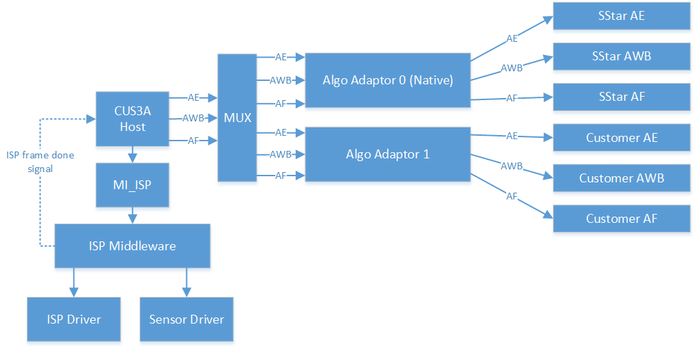
2. AE/AWB运作流程¶
用户程序必须在MI_ISP_CreateChannel之后透过CUS3A_RegInterfaceEx()注册算法库(callback function)，并且透过CUS3A_SetAlgpAdaptor()将算法切换至用户算法库。当前端Sensor开始取影像，ISP核心会在每帧影像中断时呼叫算法run()，并且将硬件统计值带入算法中。当ISP关闭时，透过release()通知算法释放所有资源。
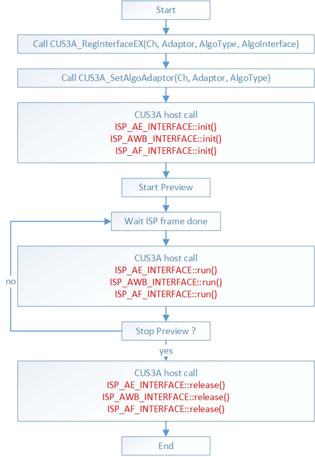
流程图中红色字体为算法必须提供的callback function。
3. AE/AWB STATISTIC FORMAT¶
AE/AWB统计值在程序代码中定义如下，每张影像均会产生128*90笔取样数据。
在Macaron、Pudding、Ikayaki、Tiramisu中，AE统计值，每张影像只会产生32*32笔取样数据。
#define isp_3A_ROW (128) /**< number of 3A statistic blocks in a row */
#define isp_3A_COL (90) /**< number of 3A statistic blocks in a column */
/*! @brief Single AE HW statistics data*/
typedef struct
{
U8 r; /**< block pixel R average , 0~255*/
U8 g; /**< block pixel G average , 0~255, g=(Gr+Gb+1)>>1*/
U8 b; /**< block pixel B average , 0~255*/
U8 y; /**< block pixel Y average , 0~255, \
y=(Ravg*9 +Gavg*19 +Bavg*4 + 16)>>5 */
}__attribute__((packed, aligned(1))) ISP_AE_SAMPLE;
/*! @brief Single AWB HW statistics data*/
typedef struct
{
U8 r; /**<center pixel R value , 0~255 */
U8 g; /**<center pixel G value , 0~255 */
U8 b; /**<center pixel B value , 0~255 */
}__attribute__((packed, aligned(1))) ISP_AWB_SAMPLE;
ISP会在每次Frame End将AE/AWB统计值传给算法端，数据排列方式如下表。ISP将影像切为：isp_3A_ROW x isp_3A_COL 区域，并计算每个区域统计值填入。
ISP_AWB_INFO::data[isp_3A_ROW*isp_3A_COL]
ISP_AE_INFO::data[isp_3A_ROW*isp_3A_COL]
| 0 | 1 | 2 | 3 | ………… | isp_3A_ROW-1 | ||||
|---|---|---|---|---|---|---|---|---|---|
| isp_3A_ROW | isp_3A_ROW +1 | isp_3A_ROW +2 | isp_3A_ROW +3 | . | . | . | . | . | isp_3A_ROW*2-1 |
| isp_3A_ROW*2 | |||||||||
| . | |||||||||
isp_3A_ROW* (isp_3A_COL-1) |
isp_3A_ROW* (isp_3A_COL-1)+1 |
isp_3A_ROW* isp_3A_COL-1 |
|||||||
针对RGB-IR sensor，硬件会额外抽出IR信息的histogram，供AE参考使用。
#define _3A_IR_HIST_BIN (256) /**< histogram type2 resolution*/
typedef struct
{
u16 u2IRHist[_3A_IR_HIST_BIN];
} ____attribute__((packed, aligned(1))) ISP_IR_HISTX;
4. AF STATISTIC FORMAT¶
设置AF统计window (ISP_AF_RECT)，提供16*n (n = 1~16) 个window可供设置 (af_stats_win[16])，每帧会将统计结果output，output结构如ISP_AF_INFO_STATS_PARAM_t，每个Window会output 6种filter的统计值。
各filter bit数表示如下：
| Filter Bit & Chip Type | Twinkie | Pretzel / Macaron / Pudding / Ikayaki |
Tiramisu / Muffin | Maruko |
|---|---|---|---|---|
| IIR | 34 | 35 | 37 | 36 |
| Sobel | 34 | 35 | 37 | 35 |
| Luma | 34 | 32 | 34 | 34 |
| YSat | 24 | 22 | 24 | 23 |
AF ROI Mode = AF_ROI_MODE_NORMAL: 只看ISP_AF_INFO_STATS.stParaAPI[0]
AF ROI Mode = AF_ROI_MODE_MATRIX: 可看ISP_AF_INFO_STATS.stParaAPI[0~15]
typedef struct
{
U32 start_x; /*range : 0~1023*/
U32 start_y; /*range : 0~1023*/
U32 end_x; /*range : 0~1023*/
U32 end_y; /*range : 0~1023*/
} ISP_AF_RECT;
typedef struct _isp_af_init_param
{
U32 Size; /**< struct size*/
ISP_AF_RECT af_stats_win[16];
/*CUS3A v1.3*/
U32 CurPos; //motor current position
U32 MinPos; //motor down position limit
U32 MaxPos; //motor up position limit
U32 MinStep;//motor minimum step
U32 MaxStep;//motor maximum step
} ISP_AF_INIT_PARAM;
4.1. 各AF Filter说明¶
| 参数名称 | 描述 | 输出/输入 |
|---|---|---|
| high_iir | 分区间统计的AF高频IIR滤波器统计值。 | 输出 |
| low_iir | 分区间统计的AF低频IIR滤波器统计值。 | 输出 |
| luma | 分区间统计的AF亮度统计值。 | 输出 |
| sobel_v | 分区间统计的AF垂直方向FIR滤波器统计值。 | 输出 |
| sobel_h | 分区间统计的AF水平方向FIR滤波器统计值。 | 输出 |
| ysat | 分区间统计的AF大于YThd的统计值个数。 | 输出 |
数据范例:
一般场景远焦:
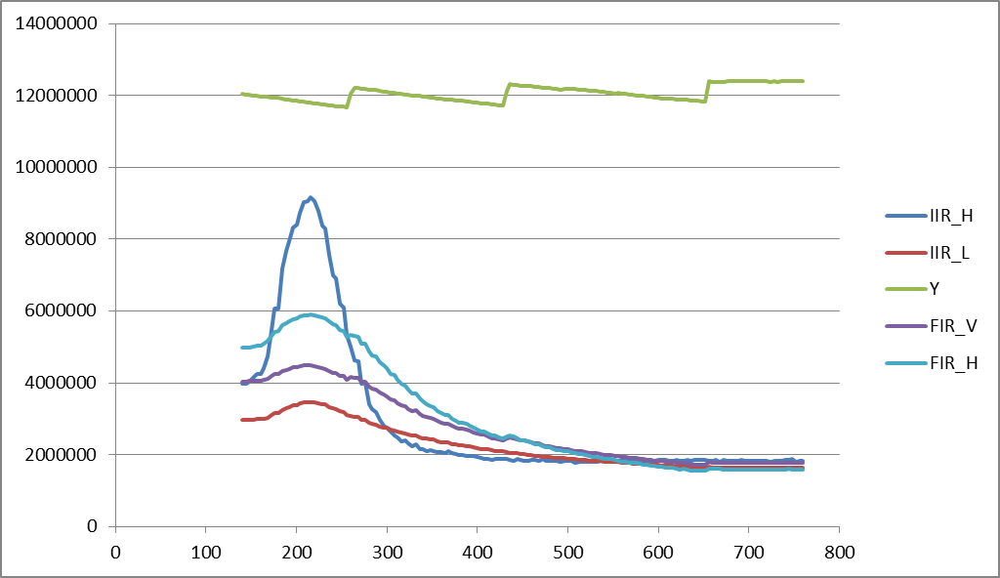
一般场景近焦:
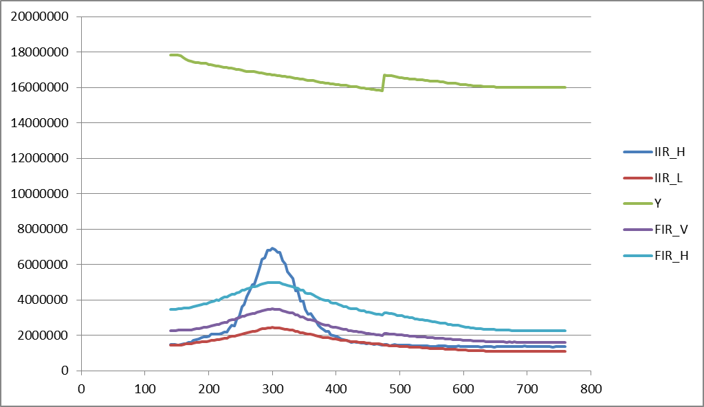
低亮度场景远焦:
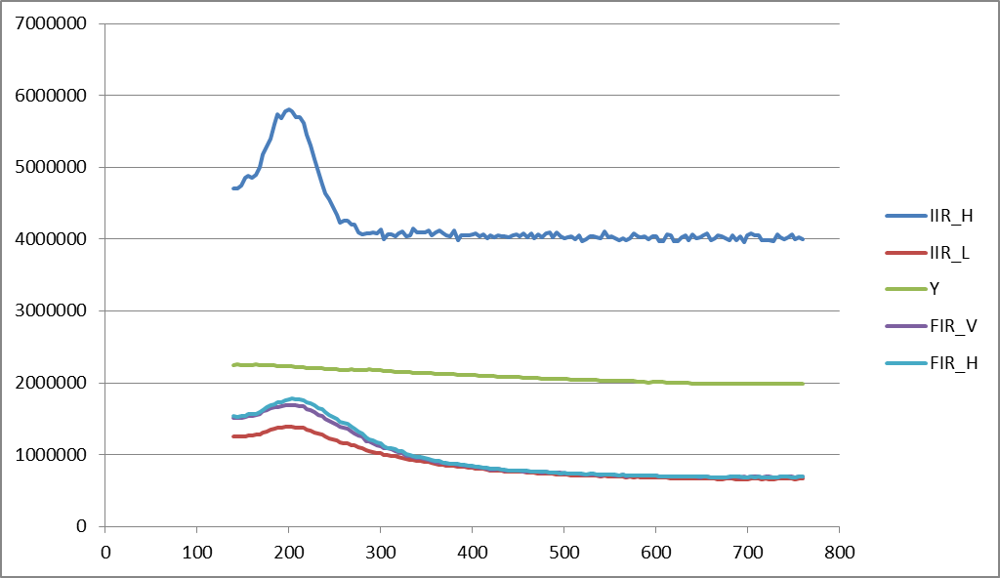
低亮度场景远焦+灯源:
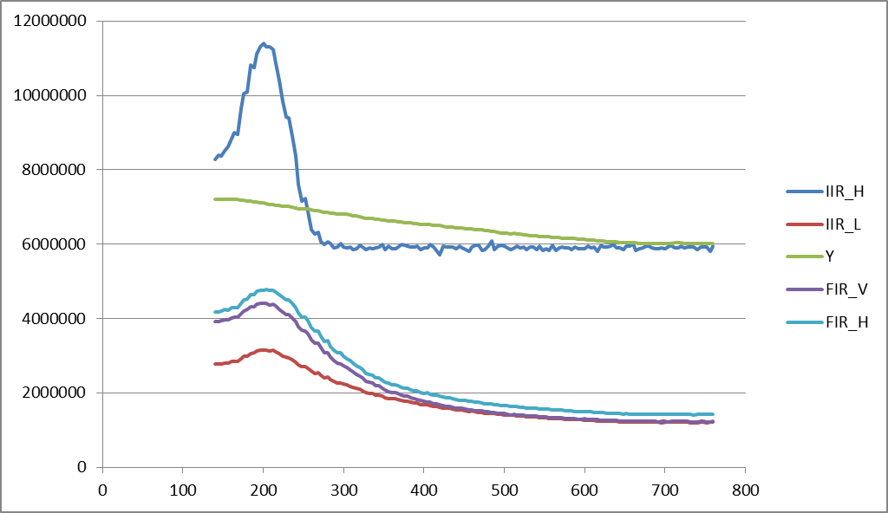
高亮场景，使用IIR结果
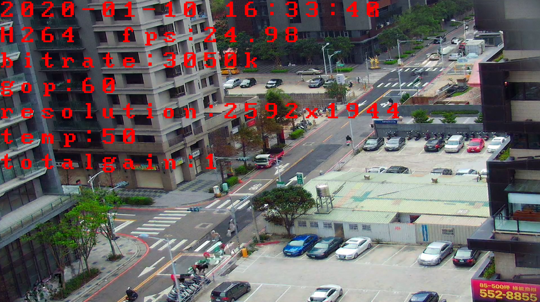
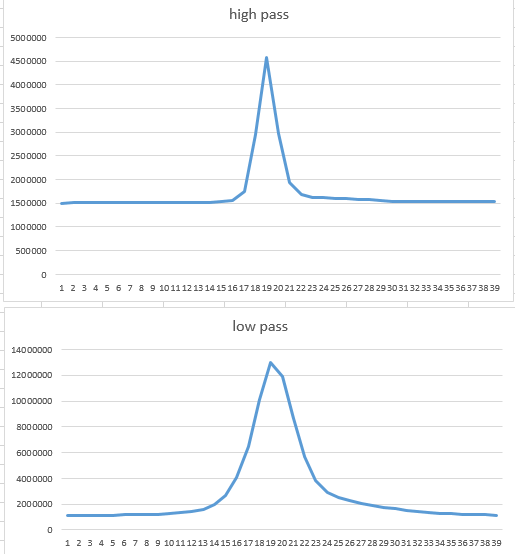
低照场景，使用IIR结果
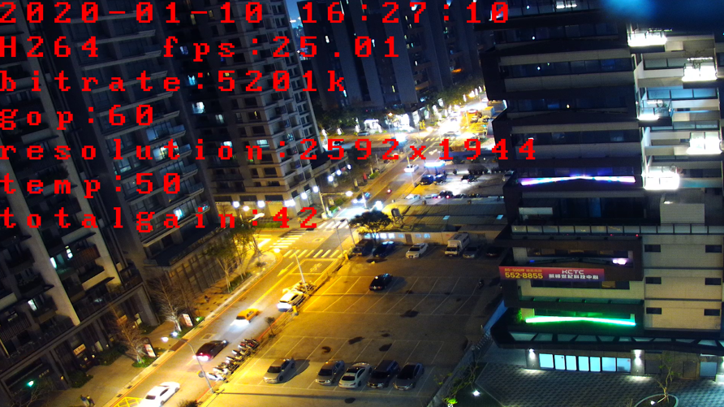
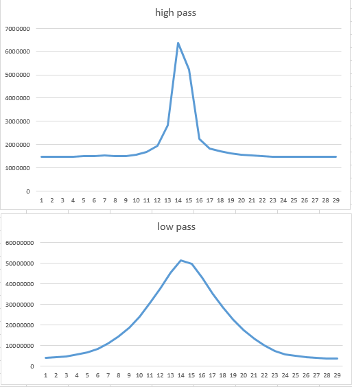
4.2. AF API概述¶
AF统计值，各API影响顺序：
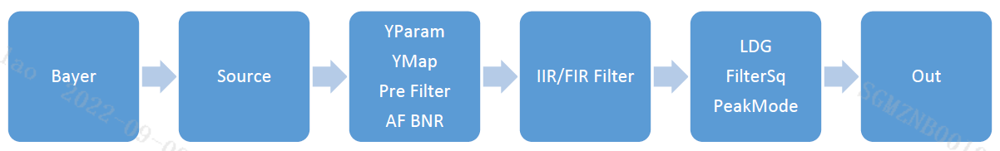
MI_ISP_CUS3A_SetAFSource： Bayer影像输入，先透过Source设定，来选择影像来源的位置。
MI_ISP_CUS3A_SetAFYParam： YParam转为亮度域（Y）的数值。
MI_ISP_CUS3A_SetAFYMap： YMap（gamma）处理。
MI_ISP_CUS3A_SetAFPreFilter： 对数值做PreFilter去噪。
MI_ISP_CUS3A_SetAFBNR： AF BNR 去噪。
MI_ISP_CUS3A_SetAFFilter： IIR/FIR Filter统计。
MI_ISP_CUS3A_SetAFLdg： LDG针对不同亮度区间，调整统计值输出的比例。
MI_ISP_CUS3A_SetAFFilterSq： 由FilterSq做二次方统计值。
MI_ISP_CUS3A_SetAFPeakMode： PeakMode取得像素最大值。
5. AE RESULT¶
当ISP呼叫AE算法run()后，AE算法必须提供相对应的结果给ISP，格式如下：
/*! @brief ISP ae algorithm result*/
typedef struct
{
U32 Size; /**< struct size*/
U32 Change; /**< if true, apply this result to hw register*/
U32 Shutter; /**< Shutter in us */
U32 SensorGain; /**< Sensor gain, 1X = 1024 */
U32 IspGain; /**< ISP gain, 1X = 1024 */
U32 ShutterHdrShort; /**< Shutter in us */
U32 SensorGainHdrShort; /**< Sensor gain, 1X = 1024 */
U32 IspGainHdrShort; /**< ISP gain, 1X = 1024 */
U32 u4BVx16384; /**< Bv * 16384 in APEX system, EV = Av + Tv = Sv + Bv */
U32 AvgY; /**< frame brightness */
U32 HdrRatio; /**< hdr ratio, 1X = 1024 */
/*CUS3A v1.1*/
U32 FNx10; /**< F number * 10 */
U32 DebandFPS; /**< Target fps when running auto debanding*/
U32 WeightY; /**< frame brightness with ROI weight*/
/*CUS3A v1.3*/
U16 GMBlendRatio; /**< Adaptive Gamma Blending Ratio from AE**/
} ISP_AE_RESULT;
Size：ISP_AE_RESULT长度，用于处理版本向下兼容问题。
Change：若该值为1，ISP将此次设定值写入硬件；若为0，ISP会忽略此次的结果。
Shutter：设定Sensor曝光时间。
SensorGain：设定Sensor gain，Digital/Analog gain分配率由Sensor驱动决定。
IspGain：设定ISP digital gain。
ShutterHdrShort：设定短曝Sensor曝光时间。
SensorGainHdrShort：设定短曝Sensor gain，Digital/Analog gain分配率由Sensor驱动决定。
IspGainHdrShort：设定短曝ISP digital gain。
u4BVx16384：目前场景的亮度值，此处计算公式比照APEX。此设定值将会被IQ算法参考。
AvgY：此张影像的平均灰阶亮度，此设定值将会被IQ算法参考。
HdrRatio：此张影像的HDR长短曝比例，此设定值将会被IQ算法参考。
Fnx10：设定FN Number。
DebandFPS：设定FPS。
WeightY：此张影像经过ROI weighting的平均灰阶亮度，此设定值将会被IQ算法参考。
GMBlendRatio：当IQ的AdaptiveGamma及RGBGamma皆enable才有作用，IQ会根据此ratio去做AdaptiveGamma和RGBGamma的混和。请参考下图。值域1~1025，513代表直接使用RGBGamma不做混和。
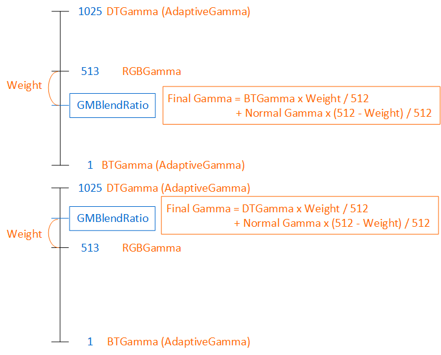
6. AWB RESULT¶
当ISP呼叫AWB算法run()后，AWB算法必须提供相对应的结果给ISP，格式如下：
/*! @brief AWB algorithm result*/
typedef struct
{
U32 Size; /**< struct size*/
U32 Change; /**< if true, apply this result to hw register*/
U32 R_gain; /**< AWB gain for R channel*/
U32 G_gain; /**< AWB gain for G channel*/
U32 B_gain; /**< AWB gain for B channel*/
U32 ColorTmp; /**< Return color temperature*/
} ISP_AWB_RESULT;
Size：ISP_AWB_RESULT长度，用于处理版本向下兼容问题。
Change：若该值为1，ISP将此次设定值写入硬件；若为0，ISP会忽略此次的结果。
R_gain：R channel增益。
G_gain：G channel增益。
B_gain：B channel增益。
ColorTmp：目前场景色温。
7. AF RESULT¶
当ISP呼叫AF算法run()后，AF算法必须提供相对应的结果给ISP，格式如下：
/*! @brief AF algorithm result*/
typedef struct
{
U32 Size; /**< struct size*/
U32 Change; /**< if true, apply this result to hw*/
U32 NextPos; /**< Next position*/
} ISP_AF_RESULT;
Size：ISP_AF_RESULT长度，用于处理版本向下兼容问题。
Change：若该值为1，通知AF演算出的焦距（NextPos）生效。
NextPos：AF算法算出的焦距结果。
8. CUS3A库界面¶
8.1. CUS3A_RegInterfaceEX¶
int CUS3A_RegInterfaceEX(CUS3A_ISP_DEV_e eDev, CUS3A_ISP_CH_e eCh, AlgoAdaptor eAdaptor, IspAlgoType eAlgoType, void* pAlgo)
-
说明
用户AE、AWB、AF库注册接口。
-
参数
参数名称 描述 输出/输入 eDev 指定算法对应的ISP硬件。 输入 eCh 指定算法对应的ISP channel。 输入 eAdaptor 指定算法对应的AlgoAdaptor，
目前只支持用户端使用E_ALGO_ADAPTOR_1。输入 eAlgoType 指定算法类型：
E_ALGO_TYPE_AE、E_ALGO_TYPE_AWB、E_ALGO_TYPE_AF。输入 pAlgo 算法实作端提供库指针，若不需实作算法，则填NULL。
pAlgo型态对应eAlgoType设定值：
E_ALGO_TYPE_AE: pAlgo = ISP_AE_INTERFACE*
E_ALGO_TYPE_AWB: pAlgo = ISP_AWB_INTERFACE*
E_ALGO_TYPE_AF: pAlgo = ISP_AF_INTERFACE*输入 -
返回值
返回值 描述 0 注册成功。 <0 注册失败。
8.2. CUS3A_SetAlgoAdaptor¶
int CUS3A_SetAlgoAdaptor(CUS3A_ISP_DEV_e eDev, CUS3A_ISP_CH_e eCh, AlgoAdaptor eAdaptor, IspAlgoType eAlgoType)
-
说明
在已注册的算法间进行切换。
-
参数
参数名称 描述 输出/输入 eDev 指定算法对应的ISP硬件。 输入 eCh 指定算法切换的ISP channel。 输入 eAdaptor 指定算法切换的AlgoAdaptor：
E_ALGO_ADAPTOR_NATIVE：SStar 3A
E_ALGO_ADAPTOR_1：用户端3A输入 eAlgoType 指定算法类型：
E_ALGO_TYPE_AE、E_ALGO_TYPE_AWB、E_ALGO_TYPE_AF。输入 -
返回值
返回值 描述 0 切换成功。 <0 切换失败。 范例:
/*ISP0 AE -> SStarAE*/ CUS3A_SetAlgoAdaptor(eIspCh0, eAdapNative, eAlgoAE) /*ISP0 AWB -> Customer AWB*/ CUS3A_SetAlgoAdaptor(eIspCh0, eAdap1, eAlgoAWB) /*ISP0 AF -> Customer AF */ CUS3A_SetAlgoAdaptor(eIspCh0, eAdap1, eAlgoAF)
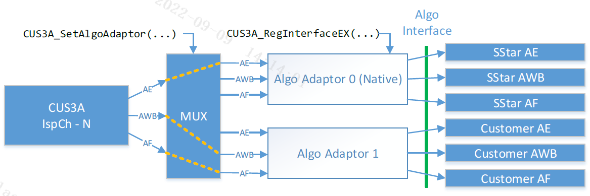
8.3. CUS3A_SetRunMode¶
int CUS3A_SetRunMode(CUS3A_ISP_DEV_e eDev, CUS3A_ISP_CH_e eCh, CUS3A_RUN_MODE_e eMode)
-
说明
CUS3A运作模式切换。
-
参数
参数名称 描述 输出/输入 eDev 指定算法对应的ISP硬件。 输入 eCh 指定算法切换的ISP channel。 输入 eMode 指定运作模式：
E_CUS3A_MODE_NORMAL──由CUS3A task在ISP frame done发生后调用3A算法，并更新Sensor与IQ参数。
E_CUS3A_MODE_INJECT──用户调用CUS3A_RunOnce()执行一次与3A算法，并更新Sensor与IQ参数。
E_CUS3A_MODE_OFF──停止3A算法调用与更新。输入 -
返回值
返回值 描述 0 切换成功。 <0 切换失败。
8.4. CUS3A_RunOnceEn¶
int CUS3A_RunOnceEn(CUS3A_ISP_DEV_e eDev, CUS3A_ISP_CH_e eCh, u8 bAeEn, u8 bAwbEn, u8 bAfEn)
-
说明
-
请确保ISP在开启状态下调用此函数。
-
对应的ISP Ch必须先透过CUS3A_SetRunMode切换到E_CUS3A_MODE_INJECT模式。
-
透过bAeEn/bAwbEn/bAfEn开启对应的ISP Ch 3A。
-
请在调用CUS3A_Release之前将bAeEn/bAwbEn/bAfEn设定为0，释放演算法资源。
-
-
参数
参数名称 描述 输出/输入 eDev 指定算法对应的ISP硬件。 输入 eCh 指定算法切换的ISP channel。 输入 bAeEn 设定Ae是否开启。 输入 bAwbEn 设定Awb是否开启。 输入 bAfEn 设定Af是否开启。 输入 -
返回值
返回值 描述 0 切换成功。 <0 切换失败。
8.5. CUS3A_RunOnce¶
int CUS3A_RunOnce(CUS3A_ISP_DEV_e eDev, CUS3A_ISP_CH_e eCh)
-
说明
-
请确保ISP在开启状态下调用此函数。
-
对应的ISP Ch必须先透过CUS3A_SetRunMode切换到E_CUS3A_MODE_INJECT模式。
-
请先执行CUS3A_RunOnceEn开启3A。
-
每次调用驱动一次3A演算法计算，并更新Sensor与IQ设定。
-
3A算法将会由调用此函数的线程执行。
-
-
参数
参数名称 描述 输出/输入 eDev 指定算法对应的ISP硬件。 输入 eCh 指定算法切换的ISP channel。 输入 -
返回值
返回值 描述 0 切换成功。 <0 切换失败。
CUS3A_RegInterface、CUS3A_AERegInterface、CUS3A_AWBRegInterface、CUS3A_AFRegInterface不建议使用，请以CUS3A_RegInterfaceEX取代。
int CUS3A_RegInterface(U32 nCh, ISP_AE_INTERFACE *pAe, ISP_AWB_INTERFACE *pAwb, ISP_AF_INTERFACE *pAf) int CUS3A_AERegInterface(u32 nCh, ISP_AE_INTERFACE *pAE); int CUS3A_AWBRegInterface(u32 nCh, ISP_AWB_INTERFACE *pAWB); int CUS3A_AFRegInterface(u32 nCh, ISP_AF_INTERFACE *pAF);
-
说明
ISP提供AE、AWB、AF库注册接口，可使用 CUS3A_RegInterface 一次注册AE、AWB、AF，或使用 CUS3A_AERegInterface、CUS3A_AWBRegInterface、CUS3A_AFRegInterface 来分别注册AE、AWB、AF。
-
参数
参数名称 描述 输出/输入 nCh nCh = 0 输入 pAe 算法实作端提供AE库指针，若不需注册，则填NULL。 输入 pAwb 算法实作端提供AWB库指针，若不需注册，则填NULL。 输入 pAf 算法实作端提供AF库指针，若不需注册，则填NULL。 输入 -
返回值
返回值 描述 0 注册成功。 <0 注册失败。
9. AE回调界面¶
int (*init)(void* pdata,ISP_AE_INIT_PARAM *init_state)
-
说明
ISP透过此接口通知AE库进行初始化。
-
参数
参数名称 描述 输出/输入 pdata 算法私有数据指针。 输入 init_state AE初始值。 输入 -
返回值
返回值 描述 0 初始化成功。 -1 初始化失败。
void (*release)(void* pdata)
- 说明
ISP透过此接口通知AE库进行释放程序。
-
参数
参数名称 描述 输出/输入 pdata 算法私有数据指针。 输入
void (*run)(void* pdata,const ISP_AE_INFO *info,ISP_AE_RESULT *result)
-
说明
ISP透过此接口呼叫AE库进行运算。
-
参数
参数名称 描述 输出/输入 Pdata 算法私有数据指针。 输入 Info ISP AE统计值数据结构指针。 输入 Result ISP AE计算结果数据结构指针。 输出
int (*ctrl)(void* pdata, ISP_AE_CTRL_CMD cmd, void* param)
-
说明
ISP透过此接口控制AE参数。
-
参数
参数名称 描述 输出/输入 pdata 算法私有数据指针。 输入 cmd AE控制指令。 输入 param AE控制指令参数。 输入
10. AE数据结构¶
10.1. ISP_AE_INTERFACE¶
-
说明
AE库注册结构体，算法需实作并且填写init、release、run、ctrl回调指针，供 ISP 呼叫。
-
语法
/**@brief ISP AE interface*/ typedef struct { void *pdata; /**< Private data for AE algorithm.*/ int (*init)(void* pdata, ISP_AE_INIT_PARAM *init_state); void (*release)(void* pdata); void (*run)(void* pdata, const ISP_AE_INFO *info, ISP_AE_RESULT *result); int (*ctrl)(void* pdata, ISP_AE_CTRL_CMD cmd, void* param); } ISP_AE_INTERFACE; -
成员
名称 描述 pdata AE库私有数据指针 init AE库初始化回调指标 release AE库释放回调指针 run AE库计算回调指标，当ISP收到一侦影像统计值时，透过该指针要求AE算法进行计算。 ctrl AE库控制回调指标
10.2. ISP_AE_INIT_PARAM¶
-
说明
ISP透过此结构，告知AE算法相关硬件初始状态
-
语法
typedef struct { U32 Size; /**< struct size*/ char sensor_id[32]; /**< sensor module id*/ U32 shutter; /**< shutter Shutter in us*/ U32 shutter_step; /**< shutter Shutter step ns*/ U32 shutter_min; /**< shutter Shutter min us*/ U32 shutter_max; /**< shutter Shutter max us*/ U32 sensor_gain; /**< sensor_gain Sensor gain, 1X = 1024*/ U32 sensor_gain_min; /**< sensor_gain_min Minimum Sensor gain, 1X = 1024*/ U32 sensor_gain_max; /**< sensor_gain_max Maximum Sensor gain, 1X = 1024*/ U32 isp_gain; /**< isp_gain Isp digital gain , 1X = 1024 */ U32 isp_gain_max; /**< isp_gain Maximum Isp digital gain , 1X = 1024 */ U32 FNx10; /**< F number * 10*/ U32 fps; /**< initial frame per second*/ U32 shutterHDRShort_step; /**< shutter Shutter step ns*/ U32 shutterHDRShort_min; /**< shutter Shutter min us*/ U32 shutterHDRShort_max; /**< shutter Shutter max us*/ U32 sensor_gainHDRShort_min; /**< sensor_gain_min Minimum Sensor gain, 1X = 1024*/ U32 sensor_gainHDRShort_max; /**< sensor_gain_max Maximum Sensor gain, 1X = 1024*/ /*CUS3A v1.1*/ U32 AvgBlkX; /**< HW statistics average block number*/ U32 AvgBlkY; /**< HW statistics average block number*/ }ISP_AE_INIT_PARAM; -
成员
参数名称 描述 输出/输入 Size ISP_AE_INIT_PARAM结构长度 输入 sensor_id[32] Image sensor名称 输入 shutter 曝光时间初始值 us 输入 shutter_step 曝光时间步距 ns 输入 shutter_min 最小曝光时间 us 输入 shutter_max 最长曝光时间 us 输入 sensor_gain Sensor增益初始值 输入 sensor_gain_min Sensor增益最小值 输入 sensor_gain_max Sensor增益最大值 输入 isp_gain Isp增益初始值 输入 isp_gain_max Isp增益最大值 输入 FNx10 光圈值*10 输入 fps 每秒影像侦数 输入 shutterHDRShort_step HDR短曝，曝光时间步距 ns 输入 shutterHDRShort_min HDR短曝，最小曝光时间 us 输入 shutterHDRShort_max HDR短曝，最长曝光时间 us 输入 sensor_gainHDRShort_min HDR短曝，Sensor增益最小值 输入 sensor_gainHDRShort_max HDR短曝，Sensor增益最大值 输入 AvgBlkX AE统计值横向切割数量 输入 AvgBlkY AE统计值纵向切割数量 输入
10.3. ISP_AE_INFO¶
-
说明
ISP AE 硬件统计值
-
语法
/*! @brief ISP report to AE, hardware statistic */ typedef struct { U32 Size; /**< struct size*/ ISP_HIST *hist1; /**< HW statistic histogram 1*/ ISP_HIST *hist2; /**< HW statistic histogram 2*/ U32 AvgBlkX; /**< HW statistics average block number*/ U32 AvgBlkY; /**< HW statistics average block number*/ ISP_AE_SAMPLE *avgs; /**< HW statistics average block data*/ U32 Shutter; /**< Current shutter in us*/ U32 SensorGain; /**< Current Sensor gain, 1X = 1024 */ U32 IspGain; /**< Current ISP gain, 1X = 1024*/ U32 ShutterHDRShort; /**< Current shutter in us*/ U32 SensorGainHDRShort; /**< Current Sensor gain, 1X = 1024 */ U32 IspGainHDRShort; /**< Current ISP gain, 1X = 1024*/ /*CUS3A v1.1*/ U32 PreAvgY; /**< Previous frame brightness */ U32 HDRCtlMode; /**< 0 = HDR off;*/ /**< 1 = Separate shutter & Separate sensor gain settings*/ /**< 2 = Separate shutter & Share sensor gain settings*/ /**< 3 = Share shutter & Separate sensor gain settings*/ U32 FNx10; /**< Aperture in FNx10 */ U32 CurFPS; /**< Current sensor FPS */ U32 PreWeightY; /**< Previous frame brightness with ROI weight */ /*CUS3A v1.2*/ ISP_IR_HISTX *histIR; /**< HW statistic histogram IR*/ ISP_HISTX *hist1_short; /**< HW statistic histogram 1 for HDR short frame*/ ISP_HISTX *hist2_short; /**< HW statistic histogram 2 for HDR short frame*/ U32 nTotalStatNum; /**< Total statistic histogram frame number*/ U32 nNextStatsOffset; /**< statistic frame offset, by byte unit*/ } ISP_AE_INFO; -
成员
| 参数名称 | 描述 | 输出/输入 |
|---|---|---|
| Size | ISP_AE_INFO结构长度。 | 输入 |
| hist1 | Histogram 1。 | 输入 |
| hist2 | Histogram 2（目前尚不支持）。 | 输入 |
| AvgBlkX | 横向切割数量。 | 输入 |
| AvgBlkY | 纵向切割数量。 | 输入 |
| avgs | 区块亮度统计值。 | 输入 |
| Shutter | 统计值发生时的曝光时间us。 | 输入 |
| SensorGain | 统计值发生时的Sensor Gain 1X=1024。 | 输入 |
| IspGain | 统计值发生时的Isp Gain 1X=1024。 | 输入 |
| ShutterHDRShort | 统计值发生时的曝光时间 us（HDR Short）。 | 输入 |
| SensorGainHDRShort | 统计值发生时的Sensor Gain 1X=1024（HDR Short）。 | 输入 |
| IspGainHDRShort | 统计值发生时的Isp Gain 1X=1024（HDR Short）。 | 输入 |
| PreAvgY | 上一次AE结果的平均亮度 8-bit*10。 | 输入 |
| HDRCtlMode | HDR mode时，sensor回传该sensor对于shutter/gain所支持的格式。 | 输入 |
| FNx10 | 统计值发生时的FN。 | 输入 |
| CurFPS | 当前FPS。 | 输入 |
| PreWeightY | 上一次AE经过ROI weighting的平均亮度8bit*10。 | 输入 |
| histIR | RGB-IR sensor时，IR信息的histogram。 | 输入 |
| hist1_short | HDR短曝的Histogram 1。 | 输入 |
| hist2_short | HDR短曝的Histogram 2（目前尚不支持）。 | 输入 |
| nTotalStatsNum | 统计值frame数量。 | 输入 |
| nNextStatsOffest | 下一个frame统计值的offset值，单位为byte。 | 输入 |
10.4. ISP_AE_RESULT¶
-
说明
ISP AE 算法计算结果
-
语法
/*! @brief ISP ae algorithm result*/ typedef struct { U32 Size; /**< struct size*/ U32 Change; /**< if true, apply this result to hw register*/ U32 Shutter; /**< Shutter in us */ U32 SensorGain; /**< Sensor gain, 1X = 1024 */ U32 IspGain; /**< ISP gain, 1X = 1024 */ U32 ShutterHdrShort; /**< Shutter in us */ U32 SensorGainHdrShort; /**< Sensor gain, 1X = 1024 */ U32 IspGainHdrShort; /**< ISP gain, 1X = 1024 */ U32 u4BVx16384; /**< Bv * 16384 in APEX system, EV = Av + Tv = Sv + Bv */ U32 AvgY; /**< frame brightness */ U32 HdrRatio; /**< hdr ratio, 1X = 1024 */ /*CUS3A v1.1*/ U32 FNx10; /**< F number * 10 */ U32 DebandFPS; /**< Target fps when running auto debanding*/ U32 WeightY; /**< frame brightness with ROI weight*/ /*CUS3A v1.3*/ U16 GMBlendRatio; /**< Adaptive Gamma Blending Ratio from AE**/ }ISP_AE_RESULT; -
成员
参数名称 描述 输出/输入 Size ISP_AE_RESULT结构长度 输入 Change 通知ISP此次计算结果是否要套用到硬件 输出 Shutter AE算法回报曝光时间us 输出 SensorGain AE算法回报Sensor增益 1X=1024 输出 IspGain AE算法回报ISP增益 1X=1024 输出 ShutterHdrShort AE算法回报曝光时间us (HDR Short) 输出 SensorGainHdrShort AE算法回报Sensor增益 1X=1024 (HDR Short) 输出 IspGainHdrShort AE算法回报ISP增益 1X=1024 (HDR Short) 输出 u4Bvx16384 AE算法回报目前场景亮度估测值 输出 AvgY AE算法回报目前影像平均亮度 输出 HdrRatio AE算法回报目前影像HDR长短曝比例1x=1024 输出 FNx10 AE算法回报目前影像FN Number 输出 DebandFPS AE算法回报目前影像FPS 输出 WeightY AE算法回报目前影像经过ROI weighting的平均亮度 输出 GMBlendRatio AE算法控制IQ AdaptiveGamma与RGBGamma的混和比例，值域1 ~ 1025，513代表直接使用RGBGamma不做混和 输出
10.5. ISP_AE_CTRL_CMD¶
-
说明
AE控制指令，ISP透过回调接口
int (*ctrl)(void* pdata,ISP_AE_CTRL_CMD cmd, void* param)
设定AE参数，参数param型态随不同的控制命令改变。
-
语法
typedef enum { ISP_AE_CMD_MAX }ISP_AE_CTRL_CMD; -
成员
名称 描述 参数型态 ISP_AE_CMD_MAX Reserved保留值，目前已不使用 N/A.
11. AWB回调界面¶
int (*init)(void* pdata)
-
说明
ISP透过此接口通AWB库进行初始化。
-
参数
参数名称 描述 输出/输入 pdata 算法私有数据指针 输入 -
返回值
返回值 描述 0 初始化成功 -1 初始化失败
void (*release)(void* pdata)
-
说明
ISP透过此接口通知AWB库进行释放程序。
-
参数
参数名称 描述 输出/输入 pdata 算法私有数据指针 输入
void (*run)(void* pdata,const ISP_AWB_INFO *awb_info,const ISP_AE_INFO *ae_info,ISP_AWB_RESULT *result)
-
说明
ISP透过此接口呼叫AWB库进行运算。
-
参数
参数名称 描述 输出/输入 pdata 算法私有数据指针 输入 awb_info ISP AWB统计值数据结构指针 输入 ae_info ISP AE统计值数据结构指针 输入 result ISP AWB计算结果数据结构指针 输出
int (*ctrl)(void* pdata,ISP_AWB_CTRL_CMD cmd,void* param)
-
说明
ISP透过此接口控制AWB参数。
-
返回值
返回值 描述 0 控制指令成功 <0 注册失败 -
参数
参数名称 描述 输出/输入 pdata 算法私有数据指针 输入 cmd AWB控制指令 输入 param AWB控制指令参数 输入
12. AWB数据结构¶
12.1. ISP_AWB_INTERFACE¶
-
说明
AWB库注册结构体，算法需实作并且填写init、release、run、ctrl回调指针，供ISP呼叫。
-
语法
typedef struct { void *pdata; /**< Private data for AE algorithm.*/ int (*init)(void *pdata); void (*release)(void *pdata); void (*run)(void *pdata, const ISP_AWB_INFO *awb_info, const ISP_AE_INFO *ae_info, ISP_AWB_RESULT *result); int (*ctrl)(void *pdata, ISP_AWB_CTRL_CMD cmd, void* param); } ISP_AWB_INTERFACE -
成员
名称 描述 pdata AWB库私有数据指针 init AWB库初始化回调指标 release AWB库释放回调指针 run AWB库计算回调指标，当ISP收到一侦影像统计值时，透过该指针要求AWB算法进行计算。 ctrl AWB库控制回调指标
12.2. ISP_AWB_INFO¶
-
说明
ISP AWB 硬件统计值。
-
语法
/*! @brief AWB HW statistics data*/ typedef struct { U32 Size; /**< struct size*/ U32 AvgBlkX; U32 AvgBlkY; U32 CurRGain; U32 CurGGain; U32 CurBGain; ISP_AWB_SAMPLE *avgs; /*CUS3A v1.1*/ U8 HDRMode; /**< Noramal or HDR mode */ ISP_AWB_SAMPLE* pAwbStatisShort; /**< Short Shutter AWB statistic data*/ U32 u4BVx16384; /**< From AE output, Bv * 16384 in APEX system, EV = Av + Tv = Sv + Bv */ S32 WeightY; /**< frame brightness with ROI weight0 */ U32 nTotalStatNum; /**< Total statistic histogram frame number*/ U32 nNextStatsOffset; /**< statistic frame offset, by byte unit*/ } ISP_AWB_INFO; -
成员
参数名称 描述 输出/输入 Size ISP_AWB_INFO结构长度。 输入 AvgBlkX 横向切割数量。 输入 AvgBlkY 纵向切割数量。 输入 CurRGain 反应在目前影像的AWB Gain。 输入 CurGGain 反应在目前影像的AWB Gain。 输入 CurBGain 反应在目前影像的AWB Gain。 输入 avgs ISP AWB区块RGB统计值。 输入 HDRMode 目前影像是否为HDR mode。 输入 pAwbStatisShort ISP AWB区块RGB统计值（HDR mode下的短曝信息）。 输入 U4BVx16384 AE回传的BV信息。 输入 WeightY AE回传的ROI weighting的平均亮度。 输入 nTotalStatsNum 统计值frame数量。 输入 nNextStatsOffest 下一个frame统计值的offset值，单位为byte。 输入
12.3. ISP_AWB_RESULT¶
-
说明
ISP AWB 算法计算结果。
-
语法
/*! @brief AWB algorithm result*/ typedef struct { U32 Size; /**< struct size*/ U32 Change; /**< if true, apply this result to hw register*/ U32 R_gain; /**< AWB gain for R channel*/ U32 G_gain; /**< AWB gain for G channel*/ U32 B_gain; /**< AWB gain for B channel*/ U32 ColorTmp; /**< Return color temperature*/ } ISP_AWB_RESULT; -
成员
参数名称 描述 输出/输入 Size ISP_AWB_RESULT结构长度 输入 Change 通知ISP此次计算结果是否要套用到硬件 输出 R_gain AWB算法回报AWB R增益1X = 1024 输出 G_gain AWB算法回报AWB G增益1X = 1024 输出 B_gain AWB算法回报AWB B增益1X = 1024 输出 ColorTmp AWB算法回报目前场景色温K 输出
12.4. ISP_AWB_CTRL_CMD¶
-
说明
AWB控制指令，ISP透过回调接口
int (*ctrl)(void* pdata, ISP_AWB_CTRL_CMD cmd, void* param)
设定AWB参数，参数param型态随不同的控制命令改变。
-
语法
typedef enum { ISP_AWB_CMD_MAX }ISP_AWB_CTRL_CMD; -
成员
名称 描述 参数型态 ISP_AWB_CMD_MAX Reserved 保留值，目前已不使用。 N/A
13. AF回调界面¶
int (*init)(void* pdata, ISP_AF_INIT_PARAM *param)
-
说明
ISP透过此接口通AF库进行初始化。
-
参数
参数名称 描述 输出/输入 pdata 算法私有数据指针 输入 param AF初始设定 输入/出 -
返回值
返回值 描述 0 初始化成功 -1 初始化失败
void (*release)(void* pdata)
-
说明
ISP透过此接口通知AF库进行释放程序。
-
参数
参数名称 描述 输出/输入 pdata 算法私有数据指针 输入
void (*run)(void* pdata, const ISP_AF_INFO *af_info, ISP_AF_RESULT *result)
-
说明
ISP透过此接口呼叫AF库进行运算。
-
参数
参数名称 描述 输出/输入 pdata 算法私有数据指针 输入 af_info ISP AF统计值数据结构指针 输入 result ISP AF计算结果数据结构指针 输出
int (*ctrl)(void* pdata,ISP_AF_CTRL_CMD cmd,void* param) (Reserved)
-
说明
ISP透过此接口控制AF参数。
-
返回值
返回值 描述 0 控制指令成功 <0 注册失败 -
参数
参数名称 描述 输出/输入 pdata 算法私有数据指针 (Reserved) 输入 cmd AF控制指令 (Reserved) 输入 param AF控制指令参数 (Reserved) 输入
14. AF数据结构¶
14.1. ISP_AF_INTERFACE¶
-
说明
AF库注册结构体，算法需实作并且填写init、release、run、ctrl回调指针，供ISP呼叫。
-
语法
typedef struct isp_af_interface { void *pdata; /**< Private data for AF algorithm.*/ int (*init)(void *pdata, ISP_AF_INIT_PARAM *param); void (*release)(void *pdata); void (*run)(void *pdata,const ISP_AF_INFO *af_info, ISP_AF_RESULT *result); int (*ctrl)(void *pdata,ISP_AF_CTRL_CMD cmd,void* param); }ISP_AF_INTERFACE; -
成员
名称 描述 pdata AF库私有数据指针 init AF库初始化回调指标 release AF库释放回调指针 run AF库计算回调指标，当ISP收到一侦影像统计值时，透过该指针要求AF算法进行计算。 ctrl AF库控制回调指标
14.2. ISP_AF_INIT_PARAM¶
-
说明
ISP透过此结构，告知AF算法相关硬件初始状态。
-
语法
typedef struct _isp_af_init_param { u32 Size; /**< struct size*/ ISP_AF_RECT af_stats_win[16]; /**< CUS3A v1.3*/ u32 CurPos; //motor current position u32 MinPos; //motor down position limit u32 MaxPos; //motor up position limit u32 MinStep;//motor minimum step u32 MaxStep;//motor maximum step } ISP_AF_INIT_PARAM; -
成员
参数名称 描述 输出/输入 Size ISP_AF_INIT_PARAM结构长度 输入 Af_stats_win[16] 当前AF windows 设定值 输入 CurPos 当前AF电机位置 输入 MinPos AF电机下极限位置 输入 MaxPos AF电机上极限位置 输入 MinStep AF电机最小步阶 输入 MaxStep AF电机最大步阶 输入
14.3. ISP_AF_INFO¶
-
说明
ISP AF 硬件统计值
-
语法
/*! @brief AF HW statistics data*/ typedef struct { U32 Size; /**< struct size*/ ISP_AF_STATS pStats; /**< AF statistic*/ u32 CurPos; /**<motor current position*/ u32 MinPos; /**<motor down position limit*/ u32 MaxPos; /**<motor up position limit*/ }ISP_AF_INFO; -
成员
参数名称 描述 输出/输入 Size ISP_AF_INFO数据结构长度 输入 pStats ISP AF统计值 输出 CurPos 当前AF电机位置 输入 MinPos AF电机下极限位置 输入 MaxPos AF电机上极限位置 输入
14.4. ISP_AF_INFO_STATS¶
-
说明
ISP AF 硬件统计值
-
语法
typedef struct{ U8 high_iir[5*16]; U8 low_iir[5*16]; U8 luma[5*16]; U8 sobel_v[5*16]; U8 sobel_h[5*16]; U8 ysat[3*16]; } ISP_AF_INFO_STATS_PARAM_t; typedef struct{ ISP_AF_INFO_STATS_PARAM_t stParaAPI[16]; } ISP_AF_INFO_STATS; -
成员
参数名称 描述 输出/输入 high_iir 分区间统计的AF高频IIR滤波器统计值。 输出 low_iir 分区间统计的AF低频IIR滤波器统计值。 输出 luma 分区间统计的AF亮度统计值。 输出 sobel_v 分区间统计的AF垂直方向FIR滤波器统计值。 输出 sobel_h 分区间统计的AF水平方向FIR滤波器统计值。 输出 ysat 分区间统计的AF大于YThd的统计值个数。 输出 IIR FIR数值越高代表画面就越清晰。Luma表示亮度。
-
使用参考
区间加权权重： 建议「中央权重」。
统计值： 建议常时使用low_iir。high_iir在清晰时会有明显变化，但模糊时几乎不变动，适合做最清晰位置判断。FIR会有偏性，仅适合做强度变化参考。
14.5. ISP_AF_RESULT¶
-
说明
ISP AF算法计算结果。
-
语法
/*! @brief AF algorithm result*/ typedef struct { u32 Size; /**< struct size*/ u32 Change; /**< if true, apply this result to hw*/ u32 NextPos; /**< Next position*/ } ISP_AF_RESULT; -
成员
参数名称 描述 输出/输入 Change 通知ISP此次计算结果是否要套用到硬件 输出 NextPos AF电机目标位置 输出
14.6. ISP_AF_CTRL_CMD¶
-
说明
AF控制指令，ISP透过回调接口
int (*ctrl)(void* pdata,ISP_AF_CTRL_CMD cmd,void* param)
设定AF参数，参数param型态随不同的控制命令改变。
-
语法
typedef enum { ISP_AF_CMD_MAX }ISP_AF_CTRL_CMD; -
成员
名称 描述 参数型态 ISP_AF_CMD_MAX Reserved保留值，目前已不使用。 NA
15. SAMPLE CODE¶
#include <mi_isp.h>
//// AE INTERFACE TEST ////
int ae_init(void* pdata, ISP_AE_INIT_PARAM *init_state)
{
printf("****** ae_init ,shutter=%d,shutter_step=%d,sensor_gain_min=%d,sensor_gain_max=%d *******\n",
(int)init_state->shutter,
(int)init_state->shutter_step,
(int)init_state->sensor_gain,
(int)init_state->sensor_gain_max
);
return 0;
}
void ae_run(void* pdata, const ISP_AE_INFO *info, ISP_AE_RESULT *result)
{
#define log_info 1
// Only one can be chosen (the following three define)
#define shutter_test 0
#define gain_test 0
#define AE_sample 1
#if (shutter_test) || (gain_test)
static int AE_period = 4;
#endif
static unsigned int fcount = 0;
unsigned int max = info->AvgBlkY * info->AvgBlkX;
unsigned int avg = 0;
unsigned int n;
#if gain_test
static int tmp = 0;
static int tmp1 = 0;
#endif
result->Change = 0;
result->u4BVx16384 = 16384;
result->HdrRatio = 10; //infinity5 //TBD //10 * 1024; //user define hdr exposure ratio
result->IspGain = 1024;
result->SensorGain = 4096;
result->Shutter = 20000;
result->IspGainHdrShort = 1024;
result->SensorGainHdrShort = 1024;
result->ShutterHdrShort = 1000;
//result->Size = sizeof(CusAEResult_t);
for(n = 0; n < max; ++n)
{
avg += info->avgs[n].y;
}
avg /= max;
result->AvgY = avg;
#if shutter_test // shutter test under constant sensor gain
int Shutter_Step = 100; //per frame
int Shutter_Max = 33333;
int Shutter_Min = 150;
int Gain_Constant = 10240;
result->SensorGain = Gain_Constant;
result->Shutter = info->Shutter;
if(++fcount % AE_period == 0)
{
if (tmp == 0)
{
result->Shutter = info->Shutter + Shutter_Step * AE_period;
//printf("[shutter-up] result->Shutter = %d \n", result->SensorGain);
}
else
{
result->Shutter = info->Shutter - Shutter_Step * AE_period;
//printf("[shutter-down] result->Shutter = %d \n", result->SensorGain);
}
if (result->Shutter >= Shutter_Max)
{
result->Shutter = Shutter_Max;
tmp = 1;
}
if (result->Shutter <= Shutter_Min)
{
result->Shutter = Shutter_Min;
tmp = 0;
}
}
#if log_info
printf("fcount = %d, Image avg = 0x%X \n", fcount, avg);
printf("tmp = %d, Shutter: %d -> %d \n", tmp, info->Shutter, result->Shutter);
#endif
#endif
#if gain_test // gain test under constant shutter
int Gain_Step = 1024; //per frame
int Gain_Max = 1024 * 100;
int Gain_Min = 1024 * 2;
int Shutter_Constant = 20000;
result->SensorGain = info->SensorGain;
result->Shutter = Shutter_Constant;
if(++fcount % AE_period == 0)
{
if (tmp1 == 0)
{
result->SensorGain = info->SensorGain + Gain_Step * AE_period;
//printf("[gain-up] result->SensorGain = %d \n", result->SensorGain);
}
else
{
result->SensorGain = info->SensorGain - Gain_Step * AE_period;
//printf("[gain-down] result->SensorGain = %d \n", result->SensorGain);
}
if (result->SensorGain >= Gain_Max)
{
result->SensorGain = Gain_Max;
tmp1 = 1;
}
if (result->SensorGain <= Gain_Min)
{
result->SensorGain = Gain_Min;
tmp1 = 0;
}
}
#if log_info
printf("fcount = %d, Image avg = 0x%X \n", fcount, avg);
printf("tmp = %d, SensorGain: %d -> %d \n", tmp, info->SensorGain, result->SensorGain);
#endif
#endif
#if AE_sample
int y_lower = 0x28;
int y_upper = 0x38;
int change_ratio = 10; // percentage
int Gain_Min = 1024 * 2;
int Gain_Max = 1024 * 1000;
int Shutter_Min = 150;
int Shutter_Max = 33333;
result->SensorGain = info->SensorGain;
result->Shutter = info->Shutter;
if(avg < y_lower)
{
if (info->Shutter < Shutter_Max)
{
result->Shutter = info->Shutter + (info->Shutter * change_ratio / 100);
if (result->Shutter > Shutter_Max) result->Shutter = Shutter_Max;
}
else
{
result->SensorGain = info->SensorGain + (info->SensorGain * change_ratio / 100);
if (result->SensorGain > Gain_Max) result->SensorGain = Gain_Max;
}
result->Change = 1;
}
else if(avg > y_upper)
{
if (info->SensorGain > Gain_Min)
{
result->SensorGain = info->SensorGain - (info->SensorGain * change_ratio / 100);
if (result->SensorGain < Gain_Min) result->SensorGain = Gain_Min;
}
else
{
result->Shutter = info->Shutter - (info->Shutter * change_ratio / 100);
if (result->Shutter < Shutter_Min) result->Shutter = Shutter_Min;
}
result->Change = 1;
}
#if 0 //infinity5 //TBD
//hdr demo code
result->SensorGainHdrShort = result->SensorGain;
result->ShutterHdrShort = result->Shutter * 1024 / result->HdrRatio;
#endif
#if log_info
printf("fcount = %d, Image avg = 0x%X \n", fcount, avg);
printf("SensorGain: %d -> %d \n", (int)info->SensorGain, (int)result->SensorGain);
printf("Shutter: %d -> %d \n", (int)info->Shutter, (int)result->Shutter);
#endif
#endif
}
void ae_release(void* pdata)
{
printf("************* ae_release *************\n");
}
//// AWB INTERFACE TEST ////
int awb_init(void *pdata)
{
printf("************ awb_init **********\n");
return 0;
}
void awb_run(void* pdata, const ISP_AWB_INFO *info, ISP_AWB_RESULT *result)
{
#define log_info 1
static u32 count = 0;
int avg_r = 0;
int avg_g = 0;
int avg_b = 0;
int tar_rgain = 1024;
int tar_bgain = 1024;
int x = 0;
int y = 0;
result->R_gain = info->CurRGain;
result->G_gain = info->CurGGain;
result->B_gain = info->CurBGain;
result->Change = 0;
result->ColorTmp = 6000;
if (++count % 4 == 0)
{
//center area YR/G/B avg
for (y = 30; y < 60; ++y)
{
for (x = 32; x < 96; ++x)
{
avg_r += info->avgs[info->AvgBlkX * y + x].r;
avg_g += info->avgs[info->AvgBlkX * y + x].g;
avg_b += info->avgs[info->AvgBlkX * y + x].b;
}
}
avg_r /= 30 * 64;
avg_g /= 30 * 64;
avg_b /= 30 * 64;
if (avg_r < 1)
avg_r = 1;
if (avg_g < 1)
avg_g = 1;
if (avg_b < 1)
avg_b = 1;
#if log_info
printf("AVG R / G / B = %d, %d, %d \n", avg_r, avg_g, avg_b);
#endif
// calculate Rgain, Bgain
tar_rgain = avg_g * 1024 / avg_r;
tar_bgain = avg_g * 1024 / avg_b;
if (tar_rgain > info->CurRGain)
{
if (tar_rgain - info->CurRGain < 384)
result->R_gain = tar_rgain;
else
result->R_gain = info->CurRGain + (tar_rgain - info->CurRGain) / 10;
}
else
{
if (info->CurRGain - tar_rgain < 384)
result->R_gain = tar_rgain;
else
result->R_gain = info->CurRGain - (info->CurRGain - tar_rgain) / 10;
}
if (tar_bgain > info->CurBGain)
{
if (tar_bgain - info->CurBGain < 384)
result->B_gain = tar_bgain;
else
result->B_gain = info->CurBGain + (tar_bgain - info->CurBGain) / 10;
}
else
{
if (info->CurBGain - tar_bgain < 384)
result->B_gain = tar_bgain;
else
result->B_gain = info->CurBGain - (info->CurBGain - tar_bgain) / 10;
}
result->Change = 1;
result->G_gain = 1024;
#if log_info
printf("[current] r=%d, g=%d, b=%d \n", (int)info->CurRGain, (int)info->CurGGain, (int)info->CurBGain);
printf("[result] r=%d, g=%d, b=%d \n", (int)result->R_gain, (int)result->G_gain, (int)result->B_gain);
#endif
}
}
void awb_release(void *pdata)
{
printf("************ awb_release **********\n");
}
//// AF INTERFACE TEST ////
int af_init(void *pdata, ISP_AF_INIT_PARAM *param)
{
MI_U32 dev = Mdev;
MI_U32 u32ch = Mch;
MIXER_DBG("************ af_init **********\n");
#define USE_NORMAL_MODE 1
#ifdef USE_NORMAL_MODE
//Init Normal mode setting
static CusAFWin_t afwin =
{
AF_ROI_MODE_NORMAL,
1,
{ { 0, 0, 255, 255},
{ 256, 0, 511, 255},
{ 512, 0, 767, 255},
{ 768, 0, 1023, 255},
{ 0, 256, 255, 511},
{ 256, 256, 511, 511},
{ 512, 256, 767, 511},
{ 768, 256, 1023, 511},
{ 0, 512, 255, 767},
{ 256, 512, 511, 767},
{ 512, 512, 767, 767},
{ 768, 512, 1023, 767},
{ 0, 768, 255, 1023},
{ 256, 768, 511, 1023},
{ 512, 768, 767, 1023},
{ 768, 768, 1023, 1023}
}
};
MI_ISP_CUS3A_SetAFWindow(dev, u32ch, &afwin);
#else
//Init Matrix mode setting
static CusAFWin_t afwin =
{
//full image, equal divide to 16x16
//window setting need to multiple of two
AF_ROI_MODE_MATRIX,
16,
{ {0, 0, 62, 62},
{64, 64, 126, 126},
{128, 128, 190, 190},
{192, 192, 254, 254},
{256, 256, 318, 318},
{320, 320, 382, 382},
{384, 384, 446, 446},
{448, 448, 510, 510},
{512, 512, 574, 574},
{576, 576, 638, 638},
{640, 640, 702, 702},
{704, 704, 766, 766},
{768, 768, 830, 830},
{832, 832, 894, 894},
{896, 896, 958, 958},
{960, 960, 1022, 1022}
}
/*
//use two row only => 16x2 win
//and set taf_roimode.u32_vertical_block_number = 2
AF_ROI_MODE_MATRIX,
2,
{ {0, 0, 62, 62},
{64, 64, 126, 126},
{128, 0, 190, 2}, //win2 v_str, v_end doesn't use, set to (0, 2)
{192, 0, 254, 2},
{256, 0, 318, 2},
{320, 0, 382, 2},
{384, 0, 446, 2},
{448, 0, 510, 2},
{512, 0, 574, 2},
{576, 0, 638, 2},
{640, 0, 702, 2},
{704, 0, 766, 2},
{768, 0, 830, 2},
{832, 0, 894, 2},
{896, 0, 958, 2},
{960, 0, 1022, 2}
}
*/
};
MI_ISP_CUS3A_SetAFWindow(dev, u32ch, &afwin);
#endif
//set AF Filter
static CusAFFilter_t affilter =
{
//filter setting with sign value
//{s9, s10, s9, s13, s13}
//[0.3~0.6] : 20, 37, 20, -4352, 3392; 20, -39, 20, 2176, 3264; 26, 0, -26,
-1152, 2432;
//[0.2~0.5] : 20, 35, 20, -6144, 3520; 20, -39, 20, -64, 2304; 26, 0, -26,
-3328, 2432;
//[0.1~0.6] : 37, 0, -37, -6848, 3136; 37, 0, -37, 1600, 1792; 32, 0, -32,
-2624, 0;
//[0.08~0.24]: 13, 11, 13, -5568, 3456; 13, -26, 13, -7680, 3840; 15, 0, -15,
-6592, 3200;
//[0.03~0.25]: 19, 0, -19, -7808, 3776; 19, 0, -19, -4672, 2304; 17, 0, -17,
-5824, 1920;
//[0.07~0.1] : 8, -13, 8, -7680, 3968; 8, -16, 8, -7936, 4032; 3, 0, -3,
-7744, 3904;
//here use [0.3~0.6] & [0.08~0.24]
//convert to hw format (sign bit with msb)
20, 37, 20, 4352+8192, 3392, 0, 1023, 0, 1023,
13, 11, 13, 5568+8192, 3456, 0, 1023, 0, 1023,
1, 20, 39+1024, 20, 2176, 3264,
1, 26, 0, 26+512, 1152+8192, 2432,
1, 13, 26+1024, 13, 7680+8192, 3840,
1, 15, 0, 15+512, 6592+8192, 3200,
};
MI_ISP_CUS3A_SetAFFilter(dev, 0, &affilter);
//set AF Sq
CusAFFilterSq_t sq = {
.bSobelYSatEn = 0,
.u16SobelYThd = 1023,
.bIIRSquareAccEn = 1,
.bSobelSquareAccEn = 0,
.u16IIR1Thd = 0,
.u16IIR2Thd = 0,
.u16SobelHThd = 0,
.u16SobelVThd = 0,
.u8AFTbl1X = {6,7,7,6,6,6,7,6,6,7,6,6,},
.u16AFTbl1Y = {0,32,288,800,1152,1568,2048,3200,3872,4607,6271,7199,8191},
.u8AFTbl2X = {6,7,7,6,6,6,7,6,6,7,6,6,},
.u16AFTbl2Y = {0,32,288,800,1152,1568,2048,3200,3872,4607,6271,7199,8191},
};
MI_ISP_CUS3A_SetAFFilterSq(dev, 0, &sq);
#if MOTOR_TEST
mod1_isp_af_motor_init();
#endif
MIXER_DBG("**** af_init done ****\n");
return 0; }
void af_run(void *pdata, const ISP_AF_INFO *af_info, ISP_AF_RESULT *result)
{
#define af_log_info 1
#if af_log_info
int i=0,x=0;
printf("\n\n");
//print row0 16wins
x=0;
for (i=0; i<16; i++){
printf("[AF]win%d-%d iir0: 0x%02x%02x%02x%02x%02x, iir1:0x%02x%02x%02x%02x%02x, luma:0x%02x%02x%02x%02x, sobelh:0x%02x%02x%02x%02x%02x, sobelv:0x%02x%02x%02x%02x%02x ysat:0x%02x%02x%02x\n",
x, i,
af_info->af_stats.stParaAPI[x].high_iir[4+i*5],af_info->af_stats.stParaAPI[x].high_iir[3+i*5],af_info->af_stats.stParaAPI[x].high_iir[2+i*5],af_info->af_stats.stParaAPI[x].high_iir[1+i*5],af_info->af_stats.stParaAPI[x].high_iir[0+i*5],
af_info->af_stats.stParaAPI[x].low_iir[4+i*5],af_info->af_stats.stParaAPI[x].low_iir[3+i*5],af_info->af_stats.stParaAPI[x].low_iir[2+i*5],af_info->af_stats.stParaAPI[x].low_iir[1+i*5],af_info->af_stats.stParaAPI[x].low_iir[0+i*5],
af_info->af_stats.stParaAPI[x].luma[3+i*4],af_info->af_stats.stParaAPI[x].luma[2+i*4],af_info->af_stats.stParaAPI[x].luma[1+i*4],af_info->af_stats.stParaAPI[x].luma[0+i*4],
af_info->af_stats.stParaAPI[x].sobel_h[4+i*5],af_info->af_stats.stParaAPI[x].sobel_h[3+i*5],af_info->af_stats.stParaAPI[x].sobel_h[2+i*5],af_info->af_stats.stParaAPI[x].sobel_h[1+i*5],af_info->af_stats.stParaAPI[x].sobel_h[0+i*5],
af_info->af_stats.stParaAPI[x].sobel_v[4+i*5],af_info->af_stats.stParaAPI[x].sobel_v[3+i*5],af_info->af_stats.stParaAPI[x].sobel_v[2+i*5],af_info->af_stats.stParaAPI[x].sobel_v[1+i*5],af_info->af_stats.stParaAPI[x].sobel_v[0+i*5],
af_info->af_stats.stParaAPI[x].ysat[2+i*3],af_info->af_stats.stParaAPI[x].ysat[1+i*3],af_info->af_stats.stParaAPI[x].ysat[0+i*3]
);
}
//print row15 16wins
x=15;
for (i=0; i<16; i++){
printf("[AF]win%d-%d iir0: 0x%02x%02x%02x%02x%02x, iir1:0x%02x%02x%02x%02x%02x, luma:0x%02x%02x%02x%02x, sobelh:0x%02x%02x%02x%02x%02x, sobelv:0x%02x%02x%02x%02x%02x ysat:0x%02x%02x%02x\n",
x, i,
af_info->af_stats.stParaAPI[x].high_iir[4+i*5],af_info->af_stats.stParaAPI[x].high_iir[3+i*5],af_info->af_stats.stParaAPI[x].high_iir[2+i*5],af_info->af_stats.stParaAPI[x].high_iir[1+i*5],af_info->af_stats.stParaAPI[x].high_iir[0+i*5],
af_info->af_stats.stParaAPI[x].low_iir[4+i*5],af_info->af_stats.stParaAPI[x].low_iir[3+i*5],af_info->af_stats.stParaAPI[x].low_iir[2+i*5],af_info->af_stats.stParaAPI[x].low_iir[1+i*5],af_info->af_stats.stParaAPI[x].low_iir[0+i*5],
af_info->af_stats.stParaAPI[x].luma[3+i*4],af_info->af_stats.stParaAPI[x].luma[2+i*4],af_info->af_stats.stParaAPI[x].luma[1+i*4],af_info->af_stats.stParaAPI[x].luma[0+i*4],
af_info->af_stats.stParaAPI[x].sobel_h[4+i*5],af_info->af_stats.stParaAPI[x].sobel_h[3+i*5],af_info->af_stats.stParaAPI[x].sobel_h[2+i*5],af_info->af_stats.stParaAPI[x].sobel_h[1+i*5],af_info->af_stats.stParaAPI[x].sobel_h[0+i*5],
af_info->af_stats.stParaAPI[x].sobel_v[4+i*5],af_info->af_stats.stParaAPI[x].sobel_v[3+i*5],af_info->af_stats.stParaAPI[x].sobel_v[2+i*5],af_info->af_stats.stParaAPI[x].sobel_v[1+i*5],af_info->af_stats.stParaAPI[x].sobel_v[0+i*5],
af_info->af_stats.stParaAPI[x].ysat[2+i*3],af_info->af_stats.stParaAPI[x].ysat[1+i*3],af_info->af_stats.stParaAPI[x].ysat[0+i*3]
);
}
#endif}
void af_release(void *pdata)
{
printf("************ af_release **********\n");
}
int main(int argc,char** argv)
{
//TO DO: Register 3rd party AE/AWB library
ISP_AE_INTERFACE tAeIf;
ISP_AWB_INTERFACE tAwbIf;
CUS3A_Init();
/*AE*/
tAeIf.ctrl = NULL;
tAeIf.pdata = NULL;
tAeIf.init = ae_init;
tAeIf.release = ae_release;
tAeIf.run = ae_run;
/*AWB*/
tAwbIf.ctrl = NULL;
tAwbIf.pdata = NULL;
tAwbIf.init = awb_init;
tAwbIf.release = awb_release;
tAwbIf.run = awb_run;
CUS3A_RegInterface(0,&tAeIf,&tAwbIf,NULL);
// or use below reginterface
//CUS3A_AERegInterface(0,&tAeIf);
//CUS3A_AWBRegInterface(0,&tAwbIf);
//TO DO: Open MI
MI_SYS_Init();
while(1)
{
usleep(5000);
}
}
15.1. CUS3A_AeAvgDownSample¶
这边提供一个转换函式，将AE出来的统计值，从32x32缩小为16x16的sample code：
void ae_run(void* pdata, const ISP_AE_INFO *info, ISP_AE_RESULT *result)
{
ISP_AE_SAMPLE *pInBuf = info->avgs;
ISP_AE_SAMPLE *pOutBuf = info->avgs;
unsigned int u32InBlkNumX = info->AvgBlkX; //value is 32 for MACARON, PUDDING
unsigned int u32InBlkNumY = info->AvgBlkY; //value is 32 for MACARON, PUDDING
unsigned int u32OutBlkNumX = 16;
unsigned int u32OutBlkNumY = 16;
CUS3A_AeAvgDownSample(pInBuf, pOutBuf, u32InBlkNumX, u32InBlkNumY, u32OutBlkNumX, u32OutBlkNumY);
max = u32OutBlkNumX*u32OutBlkNumY;
}
16. MI_ISP设置AE CROP RANGE¶
16.1. MI_ISP_CUS3A_SetAECropSize¶
-
目的
设定AE的统计值范围。
-
语法
MI_RET MI_ISP_CUS3A_SetAECropSize(MI_U32 DevId, MI_U32 Channel, CusAEAWBCropSize_t *data);
-
描述
MI_ISP_CUS3A_SetAECropSize：调用此界面设置AE的统计值范围。
MI_ISP_CUS3A_SetAEWindowBlockNumber：针对统计值范围内的区域，切成MxN的Block来获得统计值。
-
参数
参数名称 描述 DevId 视讯装置号码（一般为0）。 Channel 视讯输入信道号码（一般为0）。 data 设定AE统计值的范围。 -
返回值
返回值 描述 MI_RET_SUCCESS 成功 MI_RET_FAIL 失败
16.2. CusAEAWBCropSize_t¶
-
说明
AE统计值范围。
-
定义
typedef struct { MI_U16 u2CropX; MI_U16 u2CropY; MI_U16 u2CropW; MI_U16 u2CropH; } CusAEAWBCropSize_t; -
成员
参数名称 描述 U2CropX AE/AWB统计值范围的X起点 (0 ~ 1023) U2CropY AE/AWB统计值范围的Y起点 (0 ~ 1023) U2CropW AE/AWB统计值范围的宽度 (0 ~ 1023) U2CropH AE/AWB统计值范围的高度 (0 ~ 1023) 以实际影像大小来看，Crop最终的宽高，最小只有支持到320*256。若影像大小为1920*1080，则最小可设定的cropW/H的API设定为：(320/1920)*1024, (256/1080)*1024 = 170, 242。
-
CropSize说明

注意：影像宽高已经对应到1023，所以Crop信息，都以1023来看，FW会自动取目前实际影像大小，做mapping动作，所以用户不需知道当前影像大小多少，只要设定相对位置就好。
举例：设定 CropX = 10，CropY = 10，CropW = 300，CropH = 250。若实际影像宽高为1920x1080，则反应在1920x1080上，会是：
CropX = 1920*10/1024 = 18
CropY = 1080*10/1024 = 10
CropW = 1920*300/1024 = 563
CropH = 1080*250/1024 = 263
-
需求
header file: mi_isp_cus3a_api.h
.so: libmi_isp.so
17. MI_ISP设置AE BLOCK NUMBER¶
17.1. MI_ISP_CUS3A_SetAEWindowBlockNumber¶
-
目的
设定AE的区块数量。
-
语法
MI_RET MI_ISP_CUS3A_SetAEWindowBlockNumber(MI_U32 DevId, MI_U32 Channel, MS_CUST_AE_WIN_BLOCK_NUM_TYPE_e eBlkNum);
-
描述
针对MI_ISP_CUS3A_SetAECropSize所设定的裁切范围，再设定此范围内的AE区块数量，若MI_ISP_CUS3A_SetAECropSize没有设置，则默认为影像全画面。
-
参数
参数名称 描述 DevId 视讯装置号码（一般为0）。 Channel 视讯输入信道号码（一般为0）。 eBlkNum 区块个数，将整张照片切割成X*Y格。 -
返回值
返回值 描述 MI_RET_SUCCESS 成功 MI_RET_FAIL 失败
17.2. MS_CUST_AE_WIN_BLOCK_NUM_TYPE_e¶
-
说明
AE区块。
-
定义
typedef enum { AE_16x24 = 0, AE_32x24, AE_64x48, AE_64x45, AE_128x80, AE_128x90 } AeWinBlockNum_e; -
成员
参数名称 描述 AE_16x24 画面分割成16*24块 AE_32x24 画面分割成32*24块 AE_64x48 画面分割成64*48块 AE_64x45 画面分割成64*45块 AE_128x80 画面分割成128*80块 AE_128x90 画面分割成128*90块 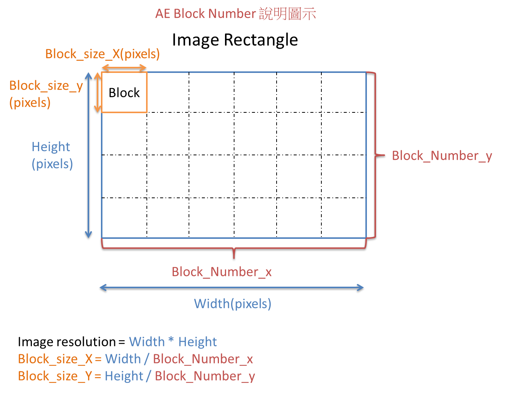
-
需求
header file: mi_isp_cus3a_api.h
.so: libmi_isp.so
-
注意
Tiramisu不支持这支API，画面强制分割成32*32块。
18. MI_ISP设置AE HISTOGRAM WINDOW¶
18.1. MI_ISP_CUS3A_SetAEHistogramWindow¶
-
目的
AE亮度分布统计值的窗口区域设定。
-
语法
MI_RET MI_ISP_CUS3A_SetAEHistogramWindow(MI_U32 DevId, MI_U32 Channel, CusAEHistWin_t *data);
-
描述
调用此接口设置AE亮度分布统计值的窗口区域位置及大小。
-
成员
参数名称 描述 DevId 视讯装置号码（一般为0）。 Channel 视讯输入信道号码（一般为0）。 data 亮度分布统计值的窗口区域位置及大小，窗口编号（0或1）。 -
返回值
返回值 描述 MI_RET_SUCCESS 成功 MI_RET_FAIL 失败
18.2. HistWin_t¶
-
说明
AE亮度分布统计值的窗口区域设定。
-
定义
typedef struct { MI_U16 u2Stawin_x_offset; MI_U16 u2Stawin_x_size; MI_U16 u2Stawin_y_offset; MI_U16 u2Stawin_y_size; MI_U16 u2WinIdx; } CusAEHistWin_t; -
成员
参数名称 描述 u2Stawin_x_offset 窗口起始坐标x轴偏移 u2Stawin_x_size x轴方向窗口大小 u2Stawin_y_offset 窗口起始坐标y轴偏移 u2Stawin_y_size y轴方向窗口大小 u2WinIdx 窗口编号(0或1) -
参数范围
X轴偏移：0 ~ 127
Y轴偏移：0 ~ 89
X轴(偏移+大小) <= 128
Y轴(偏移+大小) <= 90
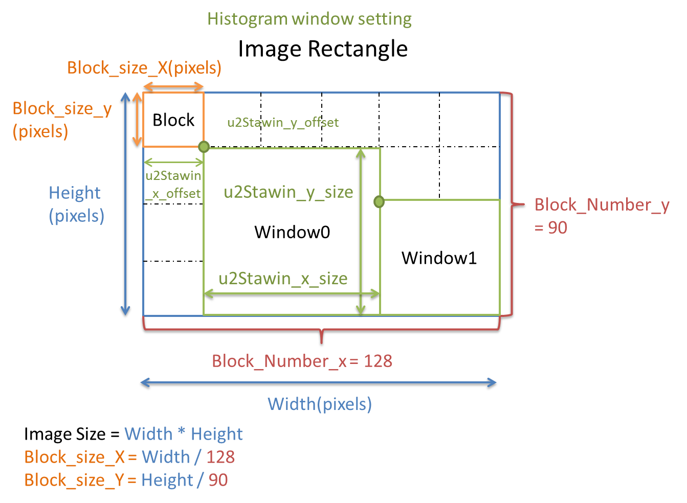
-
需求
header file: mi_isp_cus3a_api.h
.so: libmi_isp.so
-
注意
目前只能支持同时设定两个窗口（0/1）。窗口区域可以重迭。
19. MI_ISP取得YUV HISTOGRAM¶
19.1. MI_ISP_AE_GetYuvHistoHwStats¶
-
目的
取得YUV的Y亮度分布统计值。
-
语法
MI_RET MI_ISP_AE_GetYuvHistoHwStats(MI_U32 DevId, MI_U32 Channel, MI_ISP_YUV_HISTO_HW_STATISTICS_t *data);
-
描述
调用此界面取得YUV的Y亮度分布统计值。
-
成员
参数名称 描述 DevId 视讯装置号码（一般为0）。 Channel 视讯输入信道号码（一般为0）。 data YUV的Y亮度分布统计值。 -
返回值
返回值 描述 MI_RET_SUCCESS 成功 MI_RET_FAIL 失败
19.2. MI_ISP_YUV_HISTO_HW_STATISTICS_t¶
-
说明
YUV的Y亮度分布统计值。
-
定义
typedef struct { MI_U16 nHisto[YUV_HISTO_HW_SATA_BIN]; } MI_ISP_YUV_HISTO_HW_STATISTICS_t; -
成员
参数名称 描述 nHisto[YUV_HISTO_HW_SATA_BIN] 256 bin Y亮度分布统计值。 -
参数范围
YUV_HISTO_HW_SATA_BIN：256
-
需求
header file: mi_isp_cus3a_api.h
.so: libmi_isp.so
-
注意
此数值为YUV gamma处理之前，若YUV gamma有开启设定的话，Histogram无法反应最后的YUV影像亮度。
20. MI_ISP设置AWB CROP RANGE¶
20.1. MI_ISP_CUS3A_SetAWBCropSize¶
-
目的
设定AWB的统计值范围。
-
语法
MI_RET MI_ISP_CUS3A_SetAWBCropSize(MI_U32 DevId, MI_U32 Channel, CusAEAWBCropSize_t *data);
-
描述
Step 1：MI_ISP_CUS3A_SetAWBCropSize: 调用此界面设置AWB的统计值范围。
Step 2：硬件针对此统计值范围，再固定切为128x90个block。
-
参数
参数名称 描述 DevId 视讯装置号码（一般为0）。 Channel 视讯输入信道号码（一般为0）。 data 设定AWB统计值的范围。 -
返回值
返回值 描述 MI_RET_SUCCESS 成功 MI_RET_FAIL 失败
20.2. CusAWBCropSize_t¶
-
说明
AWB统计值范围。
-
定义
typedef struct { MI_U16 u2CropX; MI_U16 u2CropY; MI_U16 u2CropW; MI_U16 u2CropH; } CusAEAWBCropSize_t; -
成员
参数名称 描述 U2CropX AE/AWB统计值范围的X起点 (0 ~ 1023) U2CropY AE/AWB统计值范围的Y起点 (0 ~ 1023) U2CropW AE/AWB统计值范围的宽度 (0 ~ 1023) U2CropH AE/AWB统计值范围的高度 (0 ~ 1023) 以实际影像大小来看，Crop 最终的宽高，最小只有支持到，60x40 若影像大小为1920x1080，则最小可设定的cropW/H 的API设定为，(60/1920)*1024, (40/1080)*1024 = 32, 37。
当crop最终的影像大小，小于1280x720时，则统计值个数会开始变少，这时可读取awb info内的AvgBlkX, AvgBlkY来做确认。
-
CropSize说明
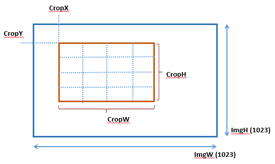
注意：影像宽高已经对应到1023，所以Crop信息，都以1023来看，FW会自动取目前实际影像大小，做mapping动作，所以用户不需知道当前影像大小多少，只要设定相对位置就好。
举例：设定CropX = 10、CropY = 10、CropW = 300、CropH = 200。若实际影像宽高为1920x1080，则反应在1920x1080上，会是
CropX = 1920*10/1023 = 18
CropY = 1080*10/1023 = 10
CropW = 1920*300/1023 = 563
CropH = 1080*200/1023 = 211
-
需求
header file: mi_isp_cus3a_api.h
.so: libmi_isp.so
21. MI_ISP设置AWB SAMPLING¶
21.1. MI_ISP_CUS3A_SetAwbSampling¶
-
目的
设定AWB取样大小。
-
语法
MI_RET MI_ISP_CUS3A_SetAwbSampling(MI_U32 DevId, MI_U32 Channel, CusAWBSample_t *data)
-
描述
调用此界面设置AWB取样大小。
-
成员
参数名称 描述 DevId 视讯装置号码（一般为0）。 Channel 视讯输入信道号码（一般为0）。 data 设定AWB取样大小。 -
返回值
返回值 描述 MI_RET_SUCCESS 成功 MI_RET_FAIL 失败
21.2. CusAWBSample_t¶
-
说明
AWB取样大小。
-
定义
typedef struct { MI_U32 SizeX; MI_U32 SizeY; MI_U32 IncRatio; } CusAWBSample_t; -
成员
参数名称 描述 SizeX X轴上取多少个取样点。 SizeY Y轴上取多少个取样点。 IncRatio 对统计值乘上一个比例。 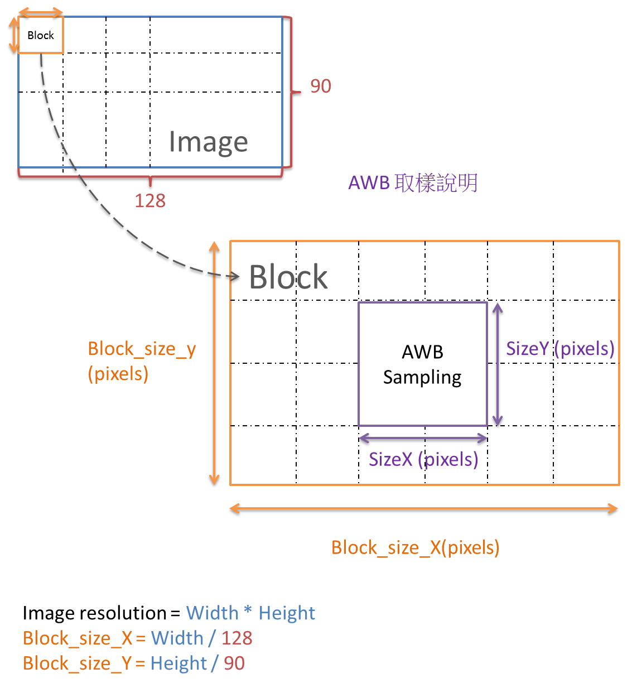
-
需求
header file: mi_isp_cus3a_api.h
.so: libmi_isp.so
-
注意
整张照片已经切割成128*90格，每个格子中取其中SizeX * SizeY个pixels做AWB取样。
SizeX：SizeX >=4 && SizeX \<= Block_size_X
SizeY：SizeY >=2 && SizeY \<= Block_size_Y
当AE亮度很低的时候，可将统计值乘上一个比例（IncRatio），避免统计值为0。
22. MI_ISP设置AF WINDOW¶
22.1. MI_ISP_CUS3A_SetAFWindow¶
-
目的
设定AF Window。
-
语法
MI_RET MI_ISP_CUS3A_SetAFWindow (MI_U32 DevId, MI_U32 Channel, CusAFWin_t *data);
-
描述
AF window在AF_Init阶段设置，将CMOS sensor image切成1024*1024坐标格来设置AF window。
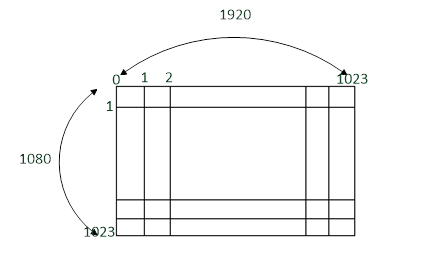
坐标与实际crop range换算公式：
Image width * X /1024 = 真实X坐标
Image height * Y / 1024 = 真实Y坐标
Ex:
AF window设置为：
Start_X = 458
End_X = 566
Start_Y = 418
End_Y = 606
则在1920x1080的CMOS sensor下设置的AF window坐标即为：
Real_Start_X = 1920 *458/1024 = 858
Real_End_X = 1920 *566/1024 = 1061
Real_Start_Y = 1080 *418/1024 = 440
Real_End_Y = 1080 *606/1024 = 639
-
参数
参数名称 描述 DevId 视讯装置号码（一般为0）。 Channel 视讯输入信道号码（一般为0）。 data AF Window设置。 -
返回值
返回值 描述 MI_RET_SUCCESS 成功 MI_RET_FAIL 失败
22.2. CusAFWin_t¶
typedef enum __attribute__ ((aligned (1)))
{
AF_ROI_MODE_NORMAL,
AF_ROI_MODE_MATRIX
} ISP_AF_ROI_MODE_e;
typedef struct AF_WINDOW_PARAM_s
{
MI_U32 u32StartX; /*range : 0~1023*/
MI_U32 u32StartY; /*range : 0~1023*/
MI_U32 u32EndX; /*range : 0~1023*/
MI_U32 u32EndY; /*range : 0~1023*/
} AF_WINDOW_PARAM_t;
typedef struct
{
ISP_AF_ROI_MODE_e mode;
MI_U32 u32_vertical_block_number;
AF_WINDOW_PARAM_t stParaAPI[16];
} CusAFWin_t;
-
参数
参数名称 描述 mode AF_ROI_MODE_NORMAL：可切为16组ROI，window size与位置可随意分割，默认为此模式。
AF_ROI_MODE_MATRIX：可切为16 * N组ROI，window size与位置稍有限制，但可切较多区块（N= u32_vertical_block_number）。u32_vertical_block_number If mode = AF_ROI_MODE_MATRIX，
可切为16 * N组ROI（N= u32_vertical_block_number, 1 ~ 16)。stParaAPI[16] 16组AF ROI position。 -
描述
在AF ROI Mode = AF_ROI_MODE_NORMAL时，StrX、StrY、EndX、EndY就是代表该Window Index的位置。
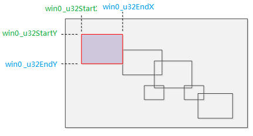
→ win0代表stParaAPI[0]
在AF ROI Mode = AF_ROI_MODE_MATRIX时，StrX和EndX就是代表横轴window切割的位置，StrY和EndY就是代表纵轴切割的位置。
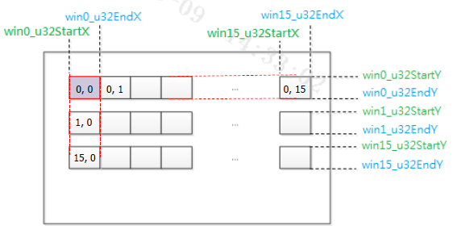
→ win0代表stParaAPI[0]
→ win1代表stParaAPI[1]
→ win15代表stParaAPI[15]
横轴，固定有16个。
纵轴，会依据u32_vertical_block_number，来决定有几组16个ROI，上图为u32_vertical_block_number=16，就有 16*16 组ROI。
使用限制：
AF ROI Mode = AF_ROI_MODE_NORMAL
-
各自window宽高设置上，可互相重迭。
-
h/v end > h/v start
AF ROI Mode = AF_ROI_MODE_MATRIX
-
各自window宽设置上，可互相重迭，但高不可重迭。
-
h/v end > h/v start
-
win0_v_start \< win0_v_end \< win1_v_start \< win1_v_end \< win2...
-
win(0,0), win(1,0), ..., win(15,0) 使用共同的h_start、h_end设定，由af0_h_start、h_end决定。
-
win(0,1), win(1,1), ..., win(15,1) 使用共同的h_start、h_end设定，由af1_h_start、h_end决定，其他以此推论。
-
win(0,0), win(0,1), ..., win(0,15) 使用共同的v_start、v_end设定，由af0_v_start、v_end决定。
-
win(1,0), win(1,1), ..., win(1,15) 使用共同的v_start、v_end设定，由af1_v_start、v_end决定，其他以此推论。
因为影像每一行都会重新计算IIR统计值，所以window h start若设定太左边（譬如h_start=0），则有可能IIR尚未收敛完成，而导致统计值有点误差。
-
-
需求
header file: mi_isp_cus3a_api.h
.so: libmi_isp.so
23. MI_ISP设置AF SOURCE¶
23.1. MI_ISP_CUS3A_SetAFSource¶
-
目的
选择AF统计值的来源。
-
语法
MI_RET MI_ISP_CUS3A_SetAFSource (MI_U32 DevId, MI_U32 Channel, CusAFSource_e *data);
-
描述
选择AF统计值的来源。
-
参数
参数名称 描述 DevId 视讯装置号码（一般为0）。 Channel 视讯输入信道号码（一般为0）。 data AF Source设置。 -
返回值
返回值 描述 MI_RET_SUCCESS 成功 MI_RET_FAIL 失败
23.2. CusAFSource_e¶
typedef enum
{
AF_SOURCE_BF_3DNR_AF_HDR = 0,
AF_SOURCE_FROM_SE_OBC_BF_HDR = 2,
AF_SOURCE_FROM_SE_WBG_BF_HDR = 3,
AF_SOURCE_FROM_ALSC_AF_HDR = 4,
AF_SOURCE_FROM_WBG_AF_HDR = 5,
AF_SOURCE_FROM_LE_OBC_BF_HDR = 6,
AF_SOURCE_FROM_LE_WBG_BF_HDR = 7,
} CusAFSource_e;
-
参数
HDR模式：
参数名称 描述 AF_SOURCE_BF_3DNR_AF_HDR 选择HDR后的结果（3DNR前）。 AF_SOURCE_FROM_SE_OBC_BF_HDR 选择HDR前的短曝结果（OB后）。 AF_SOURCE_FROM_SE_WBG_BF_HDR 选择HDR前的短曝结果（WBGain后）。 AF_SOURCE_FROM_ALSC_AF_HDR 选择HDR后的结果（Shading后）。 AF_SOURCE_FROM_WBG_AF_HDR 选择HDR后的结果（WBGain后）。 AF_SOURCE_FROM_LE_OBC_BF_HDR 选择HDR前的长曝结果（OB后）。 AF_SOURCE_FROM_LE_WBG_BF_HDR 选择HDR前的长曝结果（WBGain后）。 线性模式：
参数名称 描述 AF_SOURCE_BF_3DNR_AF_HDR 选择3DNR前的结果。 AF_SOURCE_FROM_SE_OBC_BF_HDR 选择OB后的结果。 AF_SOURCE_FROM_SE_WBG_BF_HDR 选择WBGain后的结果。 AF_SOURCE_FROM_ALSC_AF_HDR 选择CI前的结果（Shading后）。 AF_SOURCE_FROM_WBG_AF_HDR 选择CI前的结果（WBGain后）。 AF_SOURCE_FROM_LE_OBC_BF_HDR 不支援。 AF_SOURCE_FROM_LE_WBG_BF_HDR 不支援。 -
需求
header file: mi_isp_cus3a_api.h
.so: libmi_isp.so
24. MI_ISP设置AF YPARAM¶
24.1. MI_ISP_CUS3A_SetAFYParam¶
-
目的
设定AF Y Param。
-
语法
MI_RET MI_ISP_CUS3A_SetAFYParam (MI_U32 DevId, MI_U32 Channel, CusAFYParam_t *data);
-
描述
AF计算统计值时，会将Bayer data转为Y data，这边提供Bayer转Y时，R/G/B的各自比例的控制。
预设BayerRGB转成Y时，各自比例为（76, 75, 29），128为1x。当场景为逆光，或较暗时，因为亮度讯号较小，导致AF统计值偏小，反应不出峰值。这时，可将RGB比例提高，相对Y的讯号就变大，使峰值明显一些，例如比例改为（255, 252, 97），可设定的最大值为255。
-
参数
参数名称 描述 DevId 视讯装置号码（一般为0）。 Channel 视讯输入信道号码（一般为0）。 data AF YParam设置。 -
返回值
返回值 描述 MI_RET_SUCCESS 成功 MI_RET_FAIL 失败
24.2. CusAFYParam_t¶
typedef struct
{
MI_U8 r; //0~255
MI_U8 g; //0~255
MI_U8 b; //0~255
} CusAFYParam_t;
-
参数
参数名称 描述 r Bayer to Y的R channel比例（0 ~ 255）。 g Bayer to Y的G channel比例（0 ~ 255）。 b Bayer to Y的B channel比例（0 ~ 255）。 -
需求
header file: mi_isp_cus3a_api.h
.so: libmi_isp.so
25. MI_ISP设置AF YMAP¶
25.1. MI_ISP_CUS3A_SetAFYMap¶
-
目的
设定AF YMap。
-
语法
MI_RET MI_ISP_CUS3A_SetAFYMap (MI_U32 DevId, MI_U32 Channel, CusAFYMap_t *data);
-
描述
在Bayer转成Y后，再针对亮度（Y）做一个tone mapping的转换，使用时机跟MI_ISP_CUS3A_SetAFYParam一样，想针对偏暗的场景，做亮度提升的动作，进而让FV值比较好侦测。
建议可使用SetAFYMap来替代SetAFYParam。因为YParam是整体乘gain来拉亮，暗区拉亮，亮区就过曝。而SetAFYMap可针对不同区域来拉亮，让亮区不会过曝太多。
-
参数
参数名称 描述 DevId 视讯装置号码（一般为0）。 Channel 视讯输入信道号码（一般为0）。 data AF YMap设置。 -
返回值
返回值 描述 MI_RET_SUCCESS 成功 MI_RET_FAIL 失败
25.2. CusAFYMap_t (Muffin)¶
typedef struct
{
MI_U8 u8Src1En;
MI_U8 u8Src1LumaSource; // 0: bef ymap; 1: aft ymap
MI_U8 u8Src1YMapX[AF_YMAP_X_NUM]; // 1~9
MI_U16 u16Src1YMapY[AF_YMAP_Y_NUM]; // 0~1023
MI_U8 u8Src2En;
MI_U8 u8Src2LumaSource; //0: bef ymap; 1: aft ymap
MI_U8 u8Src2YMapX[AF_YMAP_X_NUM]; // 1~9
MI_U16 u16Src2YMapY[AF_YMAP_Y_NUM]; // 0~1023
MI_U8 u8LumaSrc; // 0: src2 bef map; 1: src2 aft ymap;
// 2: src1 bef map; 3: src1 aft ymap;
} CusAFYMap_t;
- 参数
| 参数名称 | 描述 |
|---|---|
| u8Src1En | Src1 YMap的开关。 |
| u8Src1LumaSource | Src1选择FIR/IIR统计值，是否经过YMap的效果 0：在YMap前 1：在YMap后 |
| u8Src1YMapX[AF_YMAP_X_NUM] | Src1 YMap的横轴，以二的幂次方累加，最后一点累加完需大于等于1023。AF_YMAP_X_NUM = 8。 |
| u16Src1YMapY[AF_YMAP_Y_NUM] | Src1 YMap的纵轴，0 ~ 1023。AF_YMAP_Y_NUM = 9。 |
| u8Src2En | Src2 YMap的开关。 |
| u8Src2LumaSource | Src2选择FIR/IIR统计值，是否经过YMap的效果 0：在YMap前 1：在YMap后 |
| u8Src2YMapX[AF_YMAP_X_NUM] | Src2 YMap的横轴，以二的幂次方累加，最后一点累加完需大于等于1023。AF_YMAP_X_NUM = 8。 |
| u16Src2YMapY[AF_YMAP_Y_NUM] | Src2 YMap的纵轴，0 ~ 1023。AF_YMAP_Y_NUM = 9。 |
| u8LumaSrc | 选择Luma统计值位置 0：在Src2 YMap前统计Luma 1：在Src2 YMap后统计Luma 2：在Src1 YMap前统计Luma 3：在Src1 YMap后统计Luma |
25.3. CusAFYMap_t (Maruko)¶
typedef struct
{
MI_U8 u8YMapEn;
MI_U8 u8YMapLumaSource; // 0: bef ymap; 1: aft ymap
MI_U8 u8YMapX[AF_YMAP_X_NUM]; // 1~9
MI_U16 u16YMapY[AF_YMAP_Y_NUM]; // 0~1023
MI_U8 u8LumaSrc; // 0: bef ymap; 1: aft ymap
} CusAFYMap_t;
-
参数
参数名称 描述 u8YMapEn YMap的开关。 u8YMapLumaSource 选择FIR/IIR统计值，是否经过YMap的效果
0：在YMap前
1：在YMap后u8YMapX[AF_YMAP_X_NUM] YMap的横轴，以二的幂次方累加，最后一点累加完需大于等于1023。AF_YMAP_X_NUM = 8。 u16YMapY[AF_YMAP_Y_NUM] YMap的纵轴，0 ~ 1023。AF_YMAP_Y_NUM = 9。 u8LumaSrc 选择Luma统计值位置
0：在YMap前统计Luma
1：在YMap后统计Luma
.ymap_x = {4, 4, 4, 4, 6, 7, 8, 9},
实际横轴为0, 16, 32, 48, 64, 128, 256, 512, 1024
.ymap_y = {0, 72, 135, 183, 222, 340, 501, 722, 1023},
-
需求
header file: mi_isp_cus3a_api.h
.so: libmi_isp.so
26. MI_ISP设置AF PREFILTER¶
26.1. MI_ISP_CUS3A_SetAFPreFilter¶
-
目的
设定AF PreFilter。
-
语法
MI_RET MI_ISP_CUS3A_SetAFPreFilter (MI_U32 DevId, MI_U32 Channel, CusAFPreFilter_t *data);
-
描述
计算统计值前，会先过一个PreFilter，来做去噪的动作，可用于低照场景，提高FV曲线的抗噪能力。只有IIR有此功能。
-
参数
参数名称 描述 DevId 视讯装置号码（一般为0）。 Channel 视讯输入信道号码（一般为0）。 data AF PreFilter设置。 -
返回值
返回值 描述 MI_RET_SUCCESS 成功 MI_RET_FAIL 失败
26.2. CusAFPreFilter_t¶
typedef struct
{
MI_U8 u8IIR1En;
MI_U8 u8IIR1Cor; //0, 1, 2, 3: 0x, 1x, 2x, 4x
MI_U8 u8IIR1Hor; //0, 1, 2, 3: 0x, 1x, 2x, 4x
MI_U8 u8IIR1Vert; //0, 1, 2, 3: 0x, 1x, 2x, 4x
MI_U8 u8IIR1Cent; //0, 1, 2, 3: 1x, 2x, 4x, 8x
MI_U8 u8IIR1Div; //0, 1, 2, 3: 1/8x, 1/16x, 1/32x, 1/64x
MI_U8 u8IIR2En;
MI_U8 u8IIR2Cor; //0, 1, 2, 3: 0x, 1x, 2x, 4x
MI_U8 u8IIR2Hor; //0, 1, 2, 3: 0x, 1x, 2x, 4x
MI_U8 u8IIR2Vert; //0, 1, 2, 3: 0x, 1x, 2x, 4x
MI_U8 u8IIR2Cent; //0, 1, 2, 3: 1x, 2x, 4x, 8x
MI_U8 u8IIR2Div; //0, 1, 2, 3: 1/8x, 1/16x, 1/32x, 1/64x
} CusAFPreFilter_t;
-
参数
参数名称 描述 u8IIR1En IIR1使用PreFilter的开关。 u8IIR2En IIR2使用PreFilter的开关。 u8IIR1Cor
u8IIR2Cor设定周围对角方向，四个像素的比例：
0: *0
1: *1
2: *2
3: *4u8IIR1Hor
u8IIR2Hor设定周围水平方向，两个像素的比例：
0: *0
1: *1
2: *2
3: *4u8IIR1Vert
u8IIR2Vert设定周围垂直方向，两个像素的比例：
0: *0
1: *1
2: *2
3: *4u8IIR1Cent
u8IIR2Cent设定当前像素的比例：
0: *1
1: *2
2: *4
3: *8u8IIR1Div
u8IIR2Div将上述像素结果累加起来，作除法的动作：
0: /8
1: /16
2: /32
3: /64像素排列如下：
Cor Vert Cor Hor Center Hor Cor Vert Cor 则做以下动作：
Out = (u8Cor * (Cor+Cor+Cor+Cor) + u8Hor * (Hor+Hor) + u8Vert * (Vert+Ver) + u8Cent * (Cent)) / u8Div
-
需求
header file: mi_isp_cus3a_api.h
.so: libmi_isp.so
27. MI_ISP设置AF BNR¶
27.1. MI_ISP_CUS3A_SetAFBNR¶
-
目的
设定AF BNR。
-
语法
MI_RET MI_ISP_CUS3A_SetAFBNR (MI_U32 DevId, MI_U32 Channel, CusAFBNR_t *data);
-
描述
将AF source做去噪处理。
此功能必须在AF source 设置在AF_SOURCE_BF_3DNR_AF_HDR时才有作用。
-
参数
参数名称 描述 DevId 视讯装置号码（一般为0）。 Channel 视讯输入信道号码（一般为0）。 data AF BNR设置。 -
返回值
返回值 描述 MI_RET_SUCCESS 成功 MI_RET_FAIL 失败
27.2. CusAFBNR_t (Muffin)¶
typedef struct
{
MI_U8 u8IIR1En;
MI_U8 u8IIR2En;
MI_U8 u8FilterStr;
MI_U8 u8SpwSel;
MI_U8 u8PrefltStr;
MI_U8 u8LumaDist[AF_BNR_LUMA_DIST_NUM];
MI_U8 u8LumaGain[AF_BNR_LUMA_GAIN_NUM];
MI_U8 u8WeiX;
MI_U8 u8WeiY[AF_BNR_WEIGHT_Y_NUM];
} CusAFBNR_t;
-
参数
参数名称 描述 u8IIR1En IIR1 Bayer降噪开关，值域0 ~ 1。 u8IIR2En IIR2 Bayer降噪开关，值域0 ~ 1。 u8FilterStr Bayer降噪强度，值域范围：0 ~ 63，值越大则NR越强。 u8SpwSel Filter选择，值域范围：0 ~ 3，值越大则NR越强。 u8PrefltStr 前置Bayer降噪强度，值域范围：0 ~ 63，值越大则NR越强。 u8LumaDist[AF_BNR_LUMA_DIST_NUM] LumaGain的横轴节点，以二的幂次方累加。值域范围：0 ~ 7。AF_BNR_LUMA_DIST_NUM = 11。 u8LumaGain[AF_BNR_LUMA_GAIN_NUM] 根据亮度差值控制Bayer降噪强度，值越大则NR越强。值域范围：0 ~ 255，1倍为16。AF_BNR_LUMA_GAIN_NUM = 12。 u8WeiX Filter强度，值域范围：0 ~ 7，值越大则NR越强。 u8WeiY[AF_BNR_WEIGHT_Y_NUM] Filter混合权重表，值域范围：0 ~ 31，值越大则NR越强，横轴为与中心点的差异，纵轴为权重，正常情况下，差异越小则权重设越大。AF_BNR_WEIGHT_Y_NUM = 32。
27.3. CusAFBNR_t (Maruko)¶
typedef struct
{
MI_U8 u8BnrEn;
MI_U8 u8FilterStr;
} CusAFBNR_t;
-
参数
参数名称 描述 u8BnrEn Bayer降噪开关，值域0 ~ 1。 u8FilterStr Bayer降噪强度，值域范围：0 ~ 63，值越大则NR越强。 -
需求
header file: mi_isp_cus3a_api.h
.so: libmi_isp.so
28. MI_ISP设置AF FILTER¶
28.1. MI_ISP_CUS3A_SetAFFilter¶
-
目的
设定AF Filter参数。
-
语法
MI_RET MI_ISP_CUS3A_SetAFFilter (MI_U32 DevId, MI_U32 Channel, CusAFFilter_t *data);
-
描述
调用此界面设置AF Filter参数。
-
参数
参数名称 描述 DevId 视讯装置号码（一般为0）。 Channel 视讯输入信道号码（一般为0）。 data AF Filter参数。 -
返回值
返回值 描述 MI_RET_SUCCESS 成功 MI_RET_FAIL 失败
28.2. CusAFFilter_t¶
typedef struct
{
MI_U16 u16IIR1_a0;
MI_U16 u16IIR1_a1;
MI_U16 u16IIR1_a2;
MI_U16 u16IIR1_b1;
MI_U16 u16IIR1_b2;
MI_U16 u16IIR1_1st_low_clip;
MI_U16 u16IIR1_1st_high_clip;
MI_U16 u16IIR1_2nd_low_clip;
MI_U16 u16IIR1_2nd_high_clip;
MI_U16 u16IIR2_a0;
MI_U16 u16IIR2_a1;
MI_U16 u16IIR2_a2;
MI_U16 u16IIR2_b1;
MI_U16 u16IIR2_b2;
MI_U16 u16IIR2_1st_low_clip;
MI_U16 u16IIR2_1st_high_clip;
MI_U16 u16IIR2_2nd_low_clip;
MI_U16 u16IIR2_2nd_high_clip;
MI_U16 u16IIR1_e1_en;
MI_U16 u16IIR1_e1_a0;
MI_U16 u16IIR1_e1_a1;
MI_U16 u16IIR1_e1_a2;
MI_U16 u16IIR1_e1_b1;
MI_U16 u16IIR1_e1_b2;
MI_U16 u16IIR1_e2_en;
MI_U16 u16IIR1_e2_a0;
MI_U16 u16IIR1_e2_a1;
MI_U16 u16IIR1_e2_a2;
MI_U16 u16IIR1_e2_b1;
MI_U16 u16IIR1_e2_b2;
MI_U16 u16IIR2_e1_en;
MI_U16 u16IIR2_e1_a0;
MI_U16 u16IIR2_e1_a1;
MI_U16 u16IIR2_e1_a2;
MI_U16 u16IIR2_e1_b1;
MI_U16 u16IIR2_e1_b2;
MI_U16 u16IIR2_e2_en;
MI_U16 u16IIR2_e2_a0;
MI_U16 u16IIR2_e2_a1;
MI_U16 u16IIR2_e2_a2;
MI_U16 u16IIR2_e2_b1;
MI_U16 u16IIR2_e2_b2;
} CusAFFilter_t;
-
成员
IIR参数如下：
名称 bit表示 描述 IIR1 default IIR2 default a0 S+9 a0乘法器 37 19 a1 S+10 a1乘法器 0 0 a2 S+9 a2乘法器 -37 -19 b1 S+13 b1乘法器 -6848 -7808 b2 S+13 b2乘法器 3136 3776 1st_low_clip 10 X(n) input low clip 0 0 1st_high_clip 10 X(n) input high clip 1023 1023 2nd_low_clip 10 Y(n) output low clip 0 0 2nd_high_clip 10 Y(n) output high clip 1023 1023 e1_en 1 Extra1 enable 1 1 e1_a0 S+9 a0乘法器 37 19 e1_a1 S+10 a1乘法器 0 0 e1_a2 S+9 a2乘法器 -37 -19 e1_b1 S+13 b1乘法器 1600 -4672 e1_b2 S+13 b2乘法器 1792 2304 e2_en 1 Extra2 enable 1 1 e2_a0 S+9 a0乘法器 32 17 e2_a1 S+10 a1乘法器 0 0 e2_a2 S+9 a2乘法器 -32 -17 e2_b1 S+13 b1乘法器 -2624 -5824 e2_b2 S+13 b2乘法器 0 1920 IIR1 default为IIR High，IIR2 default为IIR Low。
IIR系数，架构图如下：
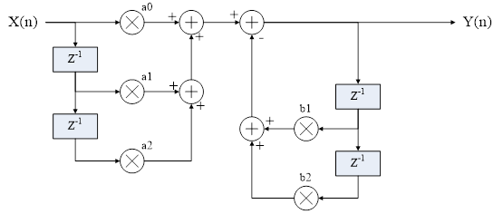
-
需求
header file: mi_isp_cus3a_api.h
.so: libmi_isp.so
29. MI_ISP设置AF LDG¶
29.1. MI_ISP_CUS3A_SetAFLDG¶
-
目的
设定AF LDG（Level Depend Gain）。
-
语法
MI_RET MI_ISP_CUS3A_SetAFLdg (MI_U32 DevId, MI_U32 Channel, CusAFLdg_t *data);
-
描述
此功能会参考像素的亮度值，来控制统计值输出的程度，来抑制点光源对FV的影响。
-
参数
参数名称 描述 DevId 视讯装置号码（一般为0）。 Channel 视讯输入信道号码（一般为0）。 data AF LDG设置。 -
返回值
返回值 描述 MI_RET_SUCCESS 成功 MI_RET_FAIL 失败
29.2. CusAFLdg_t¶
typedef struct
{
MI_U8 u8IIR1En;
MI_U8 u8IIR2En;
MI_U8 u8FIRHEn;
MI_U8 u8FIRVEn;
MI_U16 u16IIRCurveX[AF_LDG_LUT_NUM]; // 0~1023
MI_U8 u8IIRCurveY[AF_LDG_LUT_NUM]; // 0~255
MI_U16 u16FIRCurveX[AF_LDG_LUT_NUM]; // 0~1023
MI_U8 u8FIRCurveY[AF_LDG_LUT_NUM]; // 0~255
} CusAFLdg_t;
-
参数
参数名称 描述 u8IIR1En IIR1使用LDG功能的开关。 u8IIR2En IIR2使用LDG功能的开关。 u8FIRHEn FIRH使用LDG功能的开关。 u8FIRVEn FIRV使用LDG功能的开关。 u16IIRCurveX[AF_LDG_LUT_NUM] IIR LDG横轴，输入为亮度值，0 ~ 1023。
AF_LDG_LUT_NUM = 6。u8IIRCurveY[AF_LDG_LUT_NUM] IIR LDG纵轴，输出为统计值比例，0 ~ 255，255代表不衰减。
AF_LDG_LUT_NUM = 6。u16FIRCurveX[AF_LDG_LUT_NUM] FIR LDG横轴，输入为亮度值，0 ~ 1023。
AF_LDG_LUT_NUM = 6。u8FIRCurveY[AF_LDG_LUT_NUM] FIR LDG纵轴，输出为统计值比例，0 ~ 255，255代表不衰减。
AF_LDG_LUT_NUM = 6。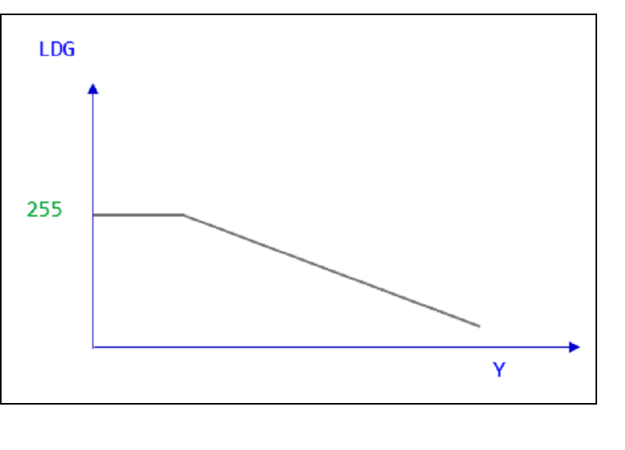
.curve_x = {0, 300, 1023, 1023, 1023, 1023},
.curve_y = {255, 255, 40, 40, 40, 40},
此设定，针对亮度300以上的统计值，开始递减，到亮度1023时，递减为40/255=0.156左右。
-
需求
header file: mi_isp_cus3a_api.h
.so: libmi_isp.so
30. MI_ISP设置AF FILTER SQUARE¶
30.1. MI_ISP_CUS3A_SetAFFilterSq¶
-
目的
设定AF Filter Square参数。
-
语法
MI_RET MI_ISP_CUS3A_SetAFFilterSq (MI_U32 DevId, MI_U32 Channel, CusAFFilterSq_t *data);
-
描述
调用此界面设置AF Filter Square参数。
-
参数
参数名称 描述 DevId 视讯装置号码（一般为0）。 Channel 视讯输入信道号码（一般为0）。 data AF Filter Square参数。 -
返回值
返回值 描述 MI_RET_SUCCESS 成功 MI_RET_FAIL 失败
30.2. CusAFFilterSq_t (Muffin)¶
typedef struct
{
MI_BOOL bSobelYSatEn;
MI_U8 u8SobelYSatSrc;
MI_U16 u16SobelYThd;
MI_BOOL bIIRSquareAccEn;
MI_BOOL bSobelSquareAccEn;
MI_U16 u16IIR1Thd;
MI_U16 u16IIR2Thd;
MI_U16 u16SobelHThd;
MI_U16 u16SobelVThd;
MI_U8 u8AFTb1lX[AF_FILTER_SQ_TBL_X_NUM];
MI_U16 u16AFTb1lY[AF_FILTER_SQ_TBL_Y_NUM];
MI_U8 u8AFTbl2X[AF_FILTER_SQ_TBL_X_NUM];
MI_U16 u16AFTbl2Y[AF_FILTER_SQ_TBL_Y_NUM];
} CusAFFilterSq_t;
-
成员
名称 描述 bSobelYSatEn 此开关包含两种动作：Sobel Filter Y阀值控制；y_sat统计值的设定控制 u8SobelYSatSrc y_sat统计值的来源选择：1：Src1 YMap后的亮度值；0：Src2 YMap后的亮度值。 u16SobelYThd 当bSobelYSatEn = 1
Sobel Filter Y阀值控制：pixel亮度小于u16SobelYThd时，就会列入sobel filter计算中。
y_sat统计值的设定控制：回传大于u16SobelYThd的pixel个数，反应于y_sat统计值中。
数值范围：0 ~ 1023。bIIRSquareAccEn IIR Filter Square增强控制开关。 bSobelSquareAccEn Sobel Filter Square增强控制开关。 u16IIR1Thd IIR1 Filter Output = IIR1 Filter Output – IIR1Thd。数值范围：0 ~ 1023。 u16IIR2Thd IIR2 Filter Output = IIR2 Filter Output – IIR2Thd。数值范围：0 ~ 1023。 u16SobelHThd SobelH Filter Output = SobelH Filter Output – SobelH Thd。数值范围：0 ~ 1023。 u16SobelVThd SobelV Filter Output = SobelV Filter Output – SobelV Thd。数值范围：0 ~ 1023。 u8AFTbl1X[AF_FILTER_SQ_TBL_X_NUM] 针对IIR1与SobelH Filter，做一个non-linear的mapping。
u8AFTbl1X为Tbl1横轴，节点为二的幂次方累加，累加起来需大于1024。
数值范围：0 ~ 15。
AF_FILTER_SQ_TBL_X_NUM = 12。u16AFTbl1Y[AF_FILTER_SQ_TBL_Y_NUM] 针对IIR1与SobelH Filter，做一个non-linear的mapping。
u16AFTbl1Y为Tbl1纵轴，数值范围：0 ~ 8191。
AF_FILTER_SQ_TBL_Y_NUM = 13。u8AFTbl2X[AF_FILTER_SQ_TBL_X_NUM] 针对IIR2与SobelV Filter，做一个non-linear的mapping。
u8AFTbl2X为Tbl2横轴，节点为二的幂次方累加，累加起来需大于1024。
数值范围：0 ~ 15。
AF_FILTER_SQ_TBL_X_NUM = 12。u16AFTbl2Y[AF_FILTER_SQ_TBL_Y_NUM] 针对IIR2与SobelV Filter，做一个non-linear的mapping。
u16AFTbl2Y为Tbl2纵轴，数值范围：0 ~ 8191。
AF_FILTER_SQ_TBL_Y_NUM = 13。SquareACC使用时机，针对中高对比度的粗边反差，做放大的动作。且低于Thd的值，会砍为0，用来抗低照下的噪点。
30.3. CusAFFilterSq_t (Maruko)¶
typedef struct
{
MI_BOOL bSobelYSatEn;
MI_U16 u16SobelYThd;
MI_BOOL bIIRSquareAccEn;
MI_BOOL bSobelSquareAccEn;
MI_U16 u16IIR1Thd;
MI_U16 u16IIR2Thd;
MI_U16 u16SobelHThd;
MI_U16 u16SobelVThd;
MI_U8 u8AFTb1lX[AF_FILTER_SQ_TBL_X_NUM];
MI_U16 u16AFTb1lY[AF_FILTER_SQ_TBL_Y_NUM];
MI_U8 u8AFTbl2X[AF_FILTER_SQ_TBL_X_NUM];
MI_U16 u16AFTbl2Y[AF_FILTER_SQ_TBL_Y_NUM];
} CusAFFilterSq_t;
-
成员
名称 描述 bSobelYSatEn 此开关包含两种动作：Sobel Filter Y阀值控制；y_sat统计值的设定控制。 u16SobelYThd 当bSobelYSatEn = 1
Sobel Filter Y阀值控制：pixel亮度小于u16SobelYThd时，就会列入sobel filter计算中。
y_sat统计值的设定控制：回传大于u16SobelYThd的pixel个数，反应于y_sat统计值中。
数值范围：0 ~ 1023。bIIRSquareAccEn IIR Filter Square增强控制开关。 bSobelSquareAccEn Sobel Filter Square增强控制开关。 u16IIR1Thd IIR1 Filter Output = IIR1 Filter Output – IIR1Thd。数值范围：0 ~ 1023。 u16IIR2Thd IIR2 Filter Output = IIR2 Filter Output – IIR2Thd。数值范围：0 ~ 1023。 u16SobelHThd SobelH Filter Output = SobelH Filter Output – SobelH Thd。数值范围：0 ~ 1023。 u16SobelVThd SobelV Filter Output = SobelV Filter Output – SobelV Thd。数值范围：0 ~ 1023。 u8AFTbl1X[AF_FILTER_SQ_TBL_X_NUM] 针对IIR1与SobelH Filter，做一个non-linear的mapping。
u8AFTbl1X为Tbl1横轴，节点为二的幂次方累加，累加起来需大于1024。
数值范围：0 ~ 15。
AF_FILTER_SQ_TBL_X_NUM = 12。u16AFTbl1Y[AF_FILTER_SQ_TBL_Y_NUM] 针对IIR1与SobelH Filter，做一个non-linear的mapping。
u16AFTbl1Y为Tbl1纵轴，数值范围：0 ~ 8191。
AF_FILTER_SQ_TBL_Y_NUM = 13。u8AFTbl2X[AF_FILTER_SQ_TBL_X_NUM] 针对IIR2与SobelV Filter，做一个non-linear的mapping。
u8AFTbl2X为Tbl2横轴，节点为二的幂次方累加，累加起来需大于1024。
数值范围：0 ~ 15。
AF_FILTER_SQ_TBL_X_NUM = 12。u16AFTbl2Y[AF_FILTER_SQ_TBL_Y_NUM] 针对IIR2与SobelV Filter，做一个non-linear的mapping。
u16AFTbl2Y为Tbl2纵轴，数值范围：0 ~ 8191。
AF_FILTER_SQ_TBL_Y_NUM = 13。SquareACC使用时机，针对中高对比度的粗边反差，做放大的动作。且低于Thd的值，会砍为0，用来抗低照下的噪点。
参考设定（Square）
u8AFTblX = 6, 7, 7, 6, 6, 6, 7, 6, 6, 7, 6, 6
u16AFTblY = 0, 32, 288, 800, 1152, 1568, 2048, 3200, 3872, 4607, 6271, 7199, 8191
参考设定（Linear，统计值保持原状）
u8AFTblX = 6, 7, 7, 6, 6, 6, 7, 6, 6, 7, 6, 6
u16AFTblY = 0, 64, 192, 320, 384, 448, 512, 640, 704, 768, 896, 960, 1023
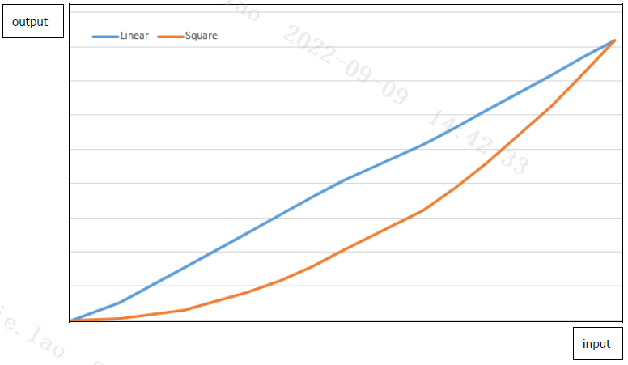
-
需求
header file: mi_isp_cus3a_api.h
.so: libmi_isp.so
31. MI_ISP设置AF PEAK MODE¶
31.1. MI_ISP_CUS3A_SetAFPeakMode¶
-
目的
设定AF Peak Mode参数。
-
语法
MI_RET MI_ISP_CUS3A_SetAFPeakMode (MI_U32 DevId, MI_U32 Channel, CusAFPeakMode_t *data);
-
描述
此功能会参考像素的亮度值做SubSample与Overlap来取得像素的最大值。
SubSample为水平方向间隔多少个像素取最大值。例如设31，等于每32个像素取1个最大值。
Overlap为SubSample后的结果再水平方向扩大（2n+1）像素找最大值来作为该像素的值。
例如设5，等于左右再多看5个像素，会找出这11个像素中最大的，作为该像素的值。
注意，因为SubSample会做水平方向取点，ROI内的像素个数也会变少，建议使用 MI_ISP_CUS3A_GetAFWindowPixelCount 来取得ROI的像素个数。
-
参数
参数名称 描述 DevId 视讯装置号码（一般为0）。 Channel 视讯输入信道号码（一般为0）。 data AF Peak Mode参数。 -
返回值
返回值 描述 MI_RET_SUCCESS 成功 MI_RET_FAIL 失败
31.2. CusAFPeakMode_t¶
typedef struct
{
MI_U8 u8IIR1En;
MI_U8 u8IIR2En;
MI_U8 u8SubSample;
MI_U8 u8Overlap;
} CusAFPeakMode_t;
-
参数
参数名称 描述 u8IIR1En IIR1使用peak mode功能的开关。 u8IIR2En IIR2使用peak mode功能的开关。 u8SubSample 水平方向间隔多少个像素取最大值，数值范围：0 ~ 31。 u8Overlap SubSample后的结果再水平方向扩大（2n+1）像素找最大值来作为该像素的值，数值范围：0 ~ 7。 -
需求
header file: mi_isp_cus3a_api.h
.so: libmi_isp.so
32. MI_ISP设置AF FIR FILTER¶
32.1. MI_ISP_CUS3A_SetAFFirFilter¶
-
目的
设定AF FIR Filter参数。
-
语法
MI_RET MI_ISP_CUS3A_SetAFFirFilter (MI_U32 DevId, MI_U32 Channel, CusAFFirFilter_t *data);
-
描述
调用此界面设置AF FIR Filter参数。
只有Maruko支持。
-
参数
参数名称 描述 DevId 视讯装置号码（一般为0）。 Channel 视讯输入信道号码（一般为0）。 data AF FIR Filter参数。 -
返回值
返回值 描述 MI_RET_SUCCESS 成功 MI_RET_FAIL 失败
32.2. CusAFFirFilter_t¶
typedef struct
{
MI_U8 u8FIR_b0;
MI_U8 u8FIR_b1;
MI_U8 u8IIR_b2;
} CusAFFirFilter_t;
-
成员
IIR参数如下：
名称 bit表示 描述 default b0 6 (二补码表示，0 ~ 31表示 0 ~ 31，32 ~ 63表示 -32 ~ -1) b0乘法器 63 b1 6 (二补码表示，0 ~ 31表示 0 ~ 31，32 ~ 63表示 -32 ~ -1) b1乘法器 2 b2 6 (二补码表示，0 ~ 31表示 0 ~ 31，32 ~ 63表示 -32 ~ -1) b2乘法器 63 -
需求
header file: mi_isp_cus3a_api.h
.so: libmi_isp.so
33. MI_ISP设置AF G MODE¶
33.1. MI_ISP_CUS3A_SetAFGMode¶
-
目的
设定AF G Mode。
-
语法
MI_RET MI_ISP_CUS3A_SetAFGMode (MI_U32 DevId, MI_U32 Channel, CusAFGMode_t *data);
-
描述
AF G Mode会取代AF Y Param的BayerRGB转成Y，改为只看Bayer Gr, Gb作为Y。
效果上可以看到更多的细节。
注意，因为G Mode取点方式不同，建议使用MI_ISP_CUS3A_GetAFWindowPixelCount来取得ROI的像素个数。
此功能：
-
不支持AF source设置在AF_SOURCE_BF_3DNR_AF_HDR。
-
不支持AF BNR。
-
不支持AF Y Param。
-
只支持IIR，不支持FIR。
只有Maruko支持。
-
-
参数
参数名称 描述 DevId 视讯装置号码（一般为0）。 Channel 视讯输入信道号码（一般为0）。 data AF G Mode设置。 -
返回值
返回值 描述 MI_RET_SUCCESS 成功 MI_RET_FAIL 失败
33.2. CusAFGMode_t¶
typedef struct
{
MI_U8 u8GModeEn;
} CusAFGMode_t;
-
参数
参数名称 描述 u8GModeEn G Mode开关，值域0 ~ 1。 -
需求
header file: mi_isp_cus3a_api.h
.so: libmi_isp.so
34. MI_ISP取得AE长曝统计值¶
34.1. MI_ISP_AE_GetAeHwAvgStats¶
-
目的
取得AE长曝统计值，包括线性模式时的AE统计值。
-
语法
MI_RET MI_ISP_AE_GetAeHwAvgStats (MI_U32 DevId, MI_U32 Channel, MI_ISP_AE_HW_STATISTICS_t *data);
-
描述
取得AE长曝统计值，包括线性模式时的AE统计值。
-
参数
参数名称 描述 DevId 视讯装置号码（一般为0）。 Channel 视讯输入信道号码（一般为0）。 data AE长曝统计值。 -
返回值
返回值 描述 MI_RET_SUCCESS 成功 MI_RET_FAIL 失败
34.2. MI_ISP_AE_HW_STATISTICS_t¶
typedef struct
{
MI_U32 nBlkX;
MI_U32 nBlkY;
MI_ISP_AE_AVGS nAvg[AE_HW_STAT_BLOCK];
} MI_ISP_AE_HW_STATISTICS_t;
-
参数
参数名称 描述 nBlkX AE统计值水平方向有效区块数，通常为32。 nBlkY AE统计值垂直方向有效区块数，通常为32。 nAvg[AE_HW_STAT_BLOCK] AE各区块的统计值。AE_HW_STAT_BLOCK = 128 * 90。
34.3. MI_ISP_AE_AVGS¶
typedef struct
{
MI_U8 u8AvgR;
MI_U8 u8AvgG;
MI_U8 u8AvgB;
MI_U8 u8AvgY;
} MI_ISP_AE_AVGS;
-
参数
参数名称 描述 u8AvgR R channel值，值域范围：0 ~ 255。 u8AvgG G channel值，值域范围：0 ~ 255。 u8AvgB B channel值：值域范围：0 ~ 255。 u8AvgY Y 亮度，值域范围：0 ~ 255。 -
需求
header file: mi_isp_cus3a_api.h
.so: libmi_isp.so
35. MI_ISP取得AWB长曝统计值¶
35.1. MI_ISP_AWB_GetAwbHwAvgStats¶
-
目的
取得AWB长曝统计值，包括线性模式时的AWB统计值。
-
语法
MI_RET MI_ISP_AWB_GetAwbHwAvgStats (MI_U32 DevId, MI_U32 Channel, MI_ISP_AWB_HW_STATISTIC_t *data);
-
描述
取得AWB长曝统计值，包括线性模式时的AWB统计值。
-
参数
参数名称 描述 DevId 视讯装置号码（一般为0）。 Channel 视讯输入信道号码（一般为0）。 data AWB长曝统计值。 -
返回值
返回值 描述 MI_RET_SUCCESS 成功 MI_RET_FAIL 失败
35.2. MI_ISP_AWB_HW_STATISTICS_t¶
typedef struct
{
MI_U32 nBlkX;
MI_U32 nBlkY;
MI_ISP_AWB_AVGS nAvg[AWB_HW_STAT_BLOCK];
} MI_ISP_AWB_HW_STATISTICS_t;
-
参数
参数名称 描述 nBlkX AWB统计值水平方向有效区块数，通常为128。 nBlkY AWB统计值垂直方向有效区块数，通常为90。 nAvg[AWB_HW_STAT_BLOCK] AWB各区块的统计值。AWB_HW_STAT_BLOCK = 128 * 90。
35.3. MI_ISP_AWB_AVGS¶
typedef struct
{
MI_U8 u8AvgR;
MI_U8 u8AvgG;
MI_U8 u8AvgB;
} MI_ISP_AWB_AVGS;
-
参数
参数名称 描述 u8AvgR R channel值，值域范围：0 ~ 255。 u8AvgG G channel值，值域范围：0 ~ 255。 u8AvgB B channel值：值域范围：0 ~ 255。 -
需求
header file: mi_isp_cus3a_api.h
.so: libmi_isp.so
36. MI_ISP取得AWB短曝统计值¶
36.1. MI_ISP_AWB_GetAwbHwAvgStatsShort¶
-
目的
取得AWB短曝统计值。
-
语法
MI_RET MI_ISP_AWB_GetAwbHwAvgStatsShort (MI_U32 DevId, MI_U32 Channel, MI_ISP_AWB_HW_STATISTIC_t *data);
-
描述
取得AWB短曝统计值。
-
参数
参数名称 描述 DevId 视讯装置号码（一般为0）。 Channel 视讯输入信道号码（一般为0）。 data AWB短曝统计值。 -
返回值
返回值 描述 MI_RET_SUCCESS 成功 MI_RET_FAIL 失败 -
需求
header file: mi_isp_cus3a_api.h
.so: libmi_isp.so
37. MI_ISP取得AF统计值¶
37.1. MI_ISP_CUS3A_GetAFStats¶
-
目的
取得AF统计值。
-
语法
MI_RET MI_ISP_CUS3A_GetAFStats (MI_U32 DevId, MI_U32 Channel, CusAFStats_t *data);
-
描述
取得AF统计值。
-
参数
参数名称 描述 DevId 视讯装置号码（一般为0）。 Channel 视讯输入信道号码（一般为0）。 data AF统计值。 -
返回值
返回值 描述 MI_RET_SUCCESS 成功 MI_RET_FAIL 失败
37.2. CusAFStats_t¶
typedef struct
{
AF_STATS_PARAM_t stParaAPI[AF_STATS_VERTICAL_BLOCK_MAX];
} CusAFStats_t;
-
参数
参数名称 描述 stParaAPI[AF_STATS_VERTICAL_BLOCK_MAX] AF各区块的统计值。分区块的方式请参照〈设置AF WINDOW〉章节。
AF_ROI_MODE_NORMAL：可切为16 * 1组ROI，可取得 stParaAPI[0] 一组，默认为此模式。
AF_ROI_MODE_MATRIX：可切为16 * N组ROI，可取得 stParaAPI[0] ~ stParaAPI[N - 1] 共N组。
AF_STATS_VERTICAL_BLOCK_MAX = 16。
37.3. AF_STATS_PARAM_t¶
typedef struct
{
MI_U8 iir_1[AF_STATS_IIR_1_SIZE * AF_HW_WIN_NUM];
MI_U8 iir_2[AF_STATS_IIR_2_SIZE * AF_HW_WIN_NUM];
MI_U8 luma[AF_STATS_LUMA_SIZE * AF_HW_WIN_NUM];
MI_U8 fir_v[AF_STATS_FIR_V_SIZE * AF_HW_WIN_NUM];
MI_U8 fir_h[AF_STATS_FIR_H_SIZE * AF_HW_WIN_NUM];
MI_U8 ysat[AF_STATS_YSAT_SIZE * AF_HW_WIN_NUM];
} AF_STATS_PARAM_t;
-
参数
参数名称 描述 iir_1[AF_STATS_IIR_1_SIZE * AF_HW_WIN_NUM] 分区间统计的AF IIR_1滤波器统计值，预设为高频。
一组IIR会使用5 * u8存放37bit的数据，共16组区间。
AF_STATS_IIR_1_SIZE = 5。
AF_HW_WIN_NUM = 16。iir_2[AF_STATS_IIR_2_SIZE * AF_HW_WIN_NUM] 分区间统计的AF IIR_2滤波器统计值，预设为低频。
一组IIR会使用5 * u8存放37bit的数据，共16组区间。
AF_STATS_IIR_2_SIZE = 5。
AF_HW_WIN_NUM = 16。luma[AF_STATS_LUMA_SIZE * AF_HW_WIN_NUM] 分区间统计的AF亮度统计值。
一组luma会使用5 * u8存放34bit的数据，共16组区间。
AF_STATS_LUMA_SIZE = 5。
AF_HW_WIN_NUM = 16。fir_v[AF_STATS_FIR_V_SIZE * AF_HW_WIN_NUM] 分区间统计的AF垂直方向FIR滤波器统计值。
一组FIR会使用5 * u8存放37bit的数据，共16组区间。
AF_STATS_FIR_V_SIZE = 5。
AF_HW_WIN_NUM = 16。fir_h[AF_STATS_FIR_H_SIZE * AF_HW_WIN_NUM] 分区间统计的AF水平方向FIR滤波器统计值。
一组FIR会使用5 * u8存放37bit的数据，共16组区间。
AF_STATS_FIR_H_SIZE = 5。
AF_HW_WIN_NUM = 16。ysat[AF_STATS_YSAT_SIZE * AF_HW_WIN_NUM] 分区间统计的AF大于YThd的统计值个数。
一组ysat会使用3 * u8存放24bit的数据，共16组区间。
AF_STATS_YSAT_SIZE = 3。
AF_HW_WIN_NUM = 16。 -
需求
header file: mi_isp_cus3a_api.h
.so: libmi_isp.so
38. MI_ISP取得AF WINDOW PIXEL COUNT¶
38.1. MI_ISP_CUS3A_GetAFWindowPixelCount¶
-
目的
取得AF window的像素个数。
-
语法
MI_RET MI_ISP_CUS3A_GetAFWindowPixelCount (MI_U32 DevId, MI_U32 Channel, CusAFWinPxCnt_t *data);
-
描述
取得AF window的像素个数。
-
参数
参数名称 描述 DevId 视讯装置号码（一般为0）。 Channel 视讯输入信道号码（一般为0）。 Data AF window的像素个数。 -
返回值
返回值 描述 MI_RET_SUCCESS 成功 MI_RET_FAIL 失败
38.2. CusAFWinPxCnt_t¶
typedef struct
{
CusAFWinPxCntOneRow_t win_px_cnt[AF_STATS_VERTICAL_BLOCK_MAX];
} CusAFWinPxCnt_t;
-
参数
参数名称 描述 win_px_cnt[AF_STATS_VERTICAL_BLOCK_MAX] AF各区块的像素个数。分区块的方式请参照〈设置AF WINDOW〉章节。
AF_ROI_MODE_NORMAL：可切为16 * 1组ROI，可取得 win_px_cnt[0] 一组，默认为此模式。
AF_ROI_MODE_MATRIX：可切为16 * N组ROI，可取得 win_px_cnt[0] ~ win_px_cnt[N - 1] 共N组。
AF_STATS_VERTICAL_BLOCK_MAX = 16。
38.3. CusAFWinPxCntOneRow_t¶
typedef struct
{
MI_U32 u32Src1Cnt[AF_HW_WIN_NUM];
MI_U32 u32Src2Cnt[AF_HW_WIN_NUM];
} CusAFWinPxCntOneRow_t;
-
参数
参数名称 描述 u32Src1Cnt[AF_HW_WIN_NUM] 分区间统计的Src1像素个数，预设为高频，共16组区间。
AF_HW_WIN_NUM = 16。u32Src2Cnt[AF_HW_WIN_NUM] 分区间统计的Src2像素个数，预设为低频，共16组区间。
AF_HW_WIN_NUM = 16。 -
需求
header file: mi_isp_cus3a_api.h
.so: libmi_isp.so
39. MI_ISP取得AE长曝HISTOGRAM¶
39.1. MI_ISP_AE_GetHisto0HwStats¶
-
目的
取得AE长曝histogram，包括线性模式时的AE histogram。
-
语法
MI_RET MI_ISP_AE_GetHisto0HwStats (MI_U32 DevId, MI_U32 Channel, MI_ISP_HISTO_HW_STATISTICS_t *data);
-
描述
取得AE长曝histogram，包括线性模式时的AE histogram。
-
参数
参数名称 描述 DevId 视讯装置号码（一般为0）。 Channel 视讯输入信道号码（一般为0）。 data AE长曝histogram。 -
返回值
返回值 描述 MI_RET_SUCCESS 成功 MI_RET_FAIL 失败
39.2. MI_ISP_HISTO_HW_STATISTICS_t¶
typedef struct
{
MI_U16 uHisto[HISTO_HW_STAT_BIN];
} MI_ISP_HISTO_HW_STATISTICS_t;
-
参数
参数名称 描述 uHisto[HISTO_HW_STAT_BIN] Histogram数值。HISTO_HW_STAT_BIN = 128。 -
需求
header file: mi_isp_cus3a_api.h
.so: libmi_isp.so
40. MI_ISP取得AE短曝HISTOGRAM¶
40.1. MI_ISP_AE_GetHisto0HwStatsShort¶
-
目的
取得AE短曝histogram。
-
语法
MI_RET MI_ISP_AE_GetHisto0HwStatsShort (MI_U32 DevId, MI_U32 Channel, MI_ISP_HISTO_HW_STATISTICS_t *data);
-
描述
取得AE短曝histogram。
-
参数
参数名称 描述 DevId 视讯装置号码（一般为0）。 Channel 视讯输入信道号码（一般为0）。 data AE短曝histogram。 -
返回值
返回值 描述 MI_RET_SUCCESS 成功 MI_RET_FAIL 失败 -
需求
header file: mi_isp_cus3a_api.h
.so: libmi_isp.so
41. MI_ISP取得YUV HISTOGRAM¶
41.1. MI_ISP_AE_GetYuvHistoHwStats¶
-
目的
取得YUV domain的亮度Y histogram。
-
语法
MI_RET MI_ISP_AE_GetYuvHistoHwStats (MI_U32 DevId, MI_U32 Channel, MI_ISP_YUV_HISTO_HW_STATISTICS_t *data);
-
描述
取得YUV domain的亮度Y histogram。此亮度会受CCM，HSV，gamma，WDR影响，不受YUV gamma影响。
此功能只有Muffin支持。
-
参数
参数名称 描述 DevId 视讯装置号码（一般为0）。 Channel 视讯输入信道号码（一般为0）。 data Y histogram。 -
返回值
返回值 描述 MI_RET_SUCCESS 成功 MI_RET_FAIL 失败
41.2. MI_ISP_YUV_HISTO_HW_STATISTICS_t¶
typedef struct
{
MI_U16 uHisto[YUV_HISTO_HW_STAT_BIN];
} MI_ISP_YUV_HISTO_HW_STATISTICS_t;
-
参数
参数名称 描述 uHisto[YUV_HISTO_HW_STAT_BIN] Y histogram数值。YUV_HISTO_HW_STAT_BIN = 256。 -
需求
header file: mi_isp_cus3a_api.h
.so: libmi_isp.so
42. MI_ISP取得RGBIR HISTOGRAM¶
42.1. MI_ISP_AE_GetRgbIrHistoHwStats¶
-
目的
取得RGBIR sensor的IR强度histogram。
-
语法
MI_RET MI_ISP_AE_GetRgbIrHistoHwStats (MI_U32 DevId, MI_U32 Channel, MI_ISP_RGBIR_HISTO_HW_STATISTICS_t *data);
-
描述
取得RGBIR sensor的IR强度histogram。
-
参数
参数名称 描述 DevId 视讯装置号码（一般为0）。 Channel 视讯输入信道号码（一般为0）。 data IR强度histogram。 -
返回值
返回值 描述 MI_RET_SUCCESS 成功 MI_RET_FAIL 失败
42.2. MI_ISP_RGBIR_HISTO_HW_STATISTICS_t¶
typedef struct
{
MI_U16 uHisto[RGBIR_HISTO_HW_STAT_BIN];
} MI_ISP_RGBIR_HISTO_HW_STATISTICS_t;
-
参数
参数名称 描述 uHisto[RGBIR_HISTO_HW_STAT_BIN] IR强度histogram数值。RGBIR_HISTO_HW_STAT_BIN = 256。 -
需求
header file: mi_isp_cus3a_api.h
.so: libmi_isp.so
43. GET CUST3A VERSION¶
参考isp_cus3a_if.h，版号定义如下：
#define CUS3A_VER_STR "CUS3A_V1.5" #define CUS3A_VER_MAJOR 1 #define CUS3A_VER_MINOR 1 unsigned int CUS3A_GetVersion(char* pVerStr);
-
可通过查看header file获得版号
-
可通过CUS3A_GetVersion获得版号
44. 各芯片支持差异列表¶
此章节描述各芯片所支持的功能列表：
| 参数名称 | Twinkie | Pretzel | Macaron |
|---|---|---|---|
| AE统计值 | 128*90 | 128*90 | 32*32 |
| AE hist2 | 支援 | 支援 | 不支援 |
| YUV hist | 不支援 | 不支援 | 不支援 |
| AF统计值 | IIR(34), FIR(34), Luma(34), YSat(24) |
IIR(35), FIR(35), Luma(32), YSat(22) |
IIR(35), FIR(35), Luma(32), YSat(22) |
| MI_ISP_CUS3A_SetAEWindowBlockNumber | 支援 | 支援 | 不支援 |
| MI_ISP_CUS3A_SetAEHistogramWindow | 偏移+大小限制: 最大128 * 90 |
偏移+大小限制: 最大128 * 90 |
偏移+大小限制: 最大32*32 |
| MI_ISP_CUS3A_SetAFFilter | 支援 | 支援 | 支援 |
| MI_ISP_CUS3A_SetAFFilterSq | 不支援 | 支援 | 支援 |
| MI_ISP_CUS3A_SetAFRoiMode | 不支援 | 支援 | 支援 |
| MI_ISP_CUS3A_SetAFSource | 支援 | 支援 | 不支援 |
| MI_ISP_CUS3A_SetAFPreFilter | 不支援 | 不支援 | 不支援 |
| MI_ISP_CUS3A_SetAFYMap | 不支援 | 不支援 | 不支援 |
| MI_ISP_CUS3A_SetAFLdg | 不支援 | 不支援 | 不支援 |
| MI_ISP_CUS3A_SetAFBNR | 不支援 | 不支援 | 不支援 |
| MI_ISP_CUS3A_SetAFPeakMode | 不支援 | 不支援 | 不支援 |
| MI_ISP_CUS3A_SetAFFirFilter | 不支援 | 不支援 | 不支援 |
| MI_ISP_CUS3A_SetAFGMode | 不支援 | 不支援 | 不支援 |